<!doctype html>
<html lang="en">
<head>
  <meta charset="utf-8">
  <meta name="viewport" content="width=device-width, initial-scale=1">
  <title>arxiv digest — 2026-06-03</title>
  <style>
:root {
  --bg: #ffffff;
  --fg: #1f2328;
  --muted: #59636e;
  --border: #d0d7de;
  --card: #f6f8fa;
  --link: #0969da;
}
body {
  max-width: 980px;
  margin: 0 auto;
  padding: 2rem 1rem 5rem;
  font-family: -apple-system, BlinkMacSystemFont, "Segoe UI", Helvetica, Arial, sans-serif;
  line-height: 1.55;
  color: var(--fg);
  background: var(--bg);
}
a { color: var(--link); }
img { max-width: 100%; height: auto; }
pre, code { background: var(--card); border-radius: 6px; }
pre { padding: 1rem; overflow-x: auto; }
blockquote { border-left: 4px solid var(--border); padding-left: 1rem; color: var(--muted); }
details { margin: 0.6rem 0; }
summary { cursor: pointer; font-weight: 600; }
.paper-figures-scroll {
  display: flex;
  gap: 1rem;
  overflow-x: auto;
  overscroll-behavior-x: contain;
  padding: 0.75rem 0.25rem 1rem;
  margin: 1rem 0 1.25rem;
  border-top: 1px solid var(--border);
  border-bottom: 1px solid var(--border);
  scroll-snap-type: x proximity;
}
.paper-figure-card {
  flex: 0 0 min(260px, 72vw);
  scroll-snap-align: start;
  background: var(--card);
  border: 1px solid var(--border);
  border-radius: 12px;
  padding: 0.55rem;
}
.paper-figure-card img {
  display: block;
  width: 100%;
  max-height: 240px;
  object-fit: contain;
  background: white;
  border-radius: 8px;
}
.paper-figure-caption {
  display: block;
  margin-top: 0.5rem;
  color: var(--muted);
  font-size: 0.85rem;
}
.figure-strip-hint {
  color: var(--muted);
  font-size: 0.9rem;
  margin-bottom: -0.3rem;
}
</style>
  <!-- MathJax: renders $...$ inline math and $$...$$ display math, plus
       \(...\) and \[...\]. Loaded from the official CDN; works offline
       once cached. Configured to skip code/pre blocks so arxiv IDs that
       look like dollar amounts don't get mangled. -->
  <script>
    window.MathJax = {
      tex: {
        inlineMath: [['$', '$'], ['\\(', '\\)']],
        displayMath: [['$$', '$$'], ['\\[', '\\]']],
        processEscapes: true,
        processEnvironments: true
      },
      options: {
        skipHtmlTags: ['script', 'noscript', 'style', 'textarea', 'pre', 'code'],
        ignoreHtmlClass: 'tex2jax_ignore',
        processHtmlClass: 'tex2jax_process'
      }
    };
  </script>
  <script id="MathJax-script" async
    src="https://cdn.jsdelivr.net/npm/mathjax@3/es5/tex-chtml.js"></script>
</head>
<body>
<header style="background-color: #333; color: white; padding: 15px; margin-bottom: 20px;">
  <h1 style="margin: 0; font-size: 24px;">
    <a href="https://ochelpan.github.io/arXiv_clean/" style="color: white; text-decoration: none;">Main</a>
  </h1>
</header>

<h1>Daily arXiv Report</h1>

<hr>
<p>
<a href="index.html">← Index</a>
 · <a href="papers_03.html">← Previous</a> · <a href="papers_05.html">Next →</a>
</p>
<hr>

<h2>Papers 61–80</h2>
<p><a id="paper-2606.03699"></a></p>
<h3 id="certifying-coherence-in-quantum-devices-under-classical-control"><a href="http://arxiv.org/abs/2606.03699v1">Certifying coherence in quantum devices under classical control</a></h3>
<p><strong>Authors:</strong> Gabriele Cobucci, Nicola D'Alessandro, Raphael Brinster, Alexander Bernal, Nikolai Wyderka, Armin Tavakoli<br>
<strong>Type:</strong> theory · <strong>Category:</strong> quantum information and computing · <strong>PDF:</strong> <a href="https://arxiv.org/pdf/2606.03699v1">https://arxiv.org/pdf/2606.03699v1</a><br>
<strong>Analysis basis:</strong> full PDF text, analyzed in chunks
<strong>Topic relevance:</strong> <code>entanglement &amp; information structure</code> <strong>2/5</strong> · <code>correlated / nonlocal dissipation</code> <strong>1/5</strong> · <code>driven-dissipative phase transition</code> <strong>1/5</strong> · <code>methods for driven-dissipative</code> <strong>1/5</strong> · <code>quantum measurements</code> <strong>1/5</strong></p>
<div class="figure-strip-hint">↔ Scroll figures horizontally</div>
<div class="paper-figures-scroll">
<figure class="paper-figure-card">
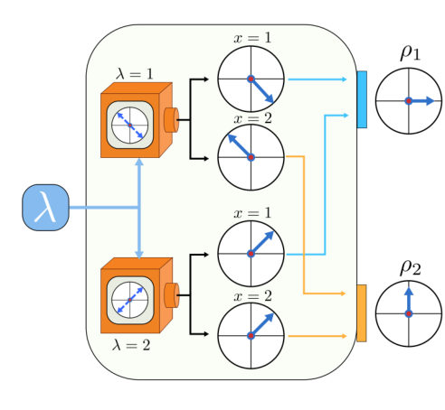
<figcaption class="paper-figure-caption"><b>Fig 1.</b> FIG. 1: Classical model simulating the non-commuting states ρ1 = v |0⟩⟨0| + 1−v</figcaption>
</figure>
<figure class="paper-figure-card">
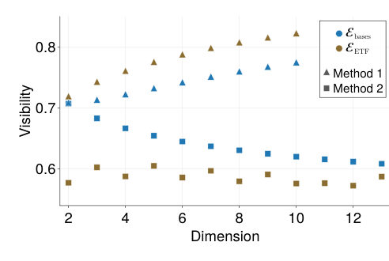
<figcaption class="paper-figure-caption"><b>Fig 2.</b> FIG. 2: Bounds on the critical isotropic noise required to certify coherence for the two sets Ebases and EETF. The points were obtained using the methods introduced in section III A (triangles) and in section III B (squares). The results from the second method are not monotone for EETF because different families are used to construct the equiangular tight frame for different d.</figcaption>
</figure>
<figure class="paper-figure-card">
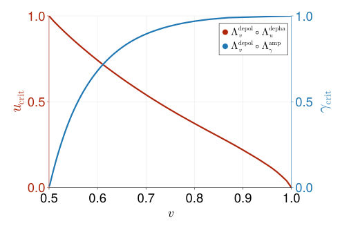
<figcaption class="paper-figure-caption"><b>Fig 3.</b> FIG. 3: Bounds on coherence properties in the channels Λdepol v ◦Λdepha u (red) and Λdepol v ◦Λamp γ (blue). We have computed bounds both for the channels being coherence-preserving and coherence-breaking, but only one is displayed since they are nearly identical (due to the polyhedron’s shrinking factor being r ≈0.9879). For any given depolarising parameter v, channels with dephasing parameter u below the red curve are coherence breaking, whereas those with values of the dampening parameter γ below the blue line are coherence preserving.</figcaption>
</figure>
</div>

<p><strong>Summary.</strong> This work provides a powerful mathematical toolbox to certify quantum coherence when the preparation process is corrupted by unknown classical variables. It achieves this by developing and comparing SDP-based criteria, offering both theoretically complete and computationally efficient methods. The results are crucial for analyzing the robustness of quantum superposition in real-world quantum devices and channels.</p>
<p><strong>Why it may be interesting.</strong> The rigorous mathematical tools developed for characterizing coherence in the presence of unknown classical noise are directly applicable to benchmarking quantum hardware and understanding decoherence mechanisms in open quantum systems.</p>
<details>
<summary>Detailed structure</summary>
<p><strong>Main problem.</strong> The paper develops complete and practical methods to certify quantum coherence in devices whose preparation process is subject to hidden classical control parameters.</p>
<p><strong>Main result.</strong> It establishes that coherence can be fully characterized by a hierarchy of Semidefinite Programs (SDPs) and provides computationally efficient SDP criteria for practical use.</p>
<p><strong>Method.</strong> The core methodology involves formulating coherence certification as checking the feasibility of increasingly complex SDP constraints, often utilizing dual formulations and iterative optimization.</p>
<p><strong>Model / system.</strong> The study analyzes quantum states ($
ho_x$) generated by a preparation device under hidden classical control ($\lambda$), and the effect of quantum channels ($\Lambda$) on these states.</p>
<p><strong>Key observables.</strong> Coherence quantifiers like $v^*(E)$ (based on isotropic noise) and the coherence witness $W(\Lambda(E))$ are central diagnostics.</p>
<p><strong>Important parameters / regimes.</strong> The dimensionality of the Hilbert space ($d$), the number of states ($N$), and the noise parameters ($v, u, \gamma$) are key parameters.</p>
<p><strong>Assumptions / limitations.</strong> The practical SDP criterion is an approximation of the full, infinite SDP hierarchy, and some analyses rely on approximating the Bloch sphere with a polyhedron.</p>
<p><strong>Figures summary.</strong> Figures compare the bounds on critical isotropic noise ($v$) derived from different SDP methods, showing superior accuracy for the proposed practical method. Another figure plots coherence bounds for composed channels.</p>
<p><strong>Paper structure.</strong> The paper builds from defining the problem (coherence under classical control) to developing the full SDP hierarchy, proposing a practical SDP criterion, and finally applying these tools to analyze coherence preservation through various quantum channels.</p>
</details>
<details>
<summary>Abstract</summary>
<p>Quantum states that do not commute exhibit coherence, but only when the device preparing them is assumed to be unaffected by classical parameters inaccessible to the experimenter. Such hidden classical control arises both in fundamental tests of quantum phenomena and in quantum information protocols that operate under limited control assumptions. Here, we address the problem of coherence certification by developing complete and practically efficient methods. First, we prove that coherence can be fully characterised through a hierarchy of semidefinite programs. Second, we introduce a practical semidefinite programming approach that achieves useful accuracy while remaining computationally efficient even for preparation devices generating many, potentially high-dimensional, quantum states. For the important special case of qubits, we further exploit conceptual connections with the theory of joint measurability to obtain highly accurate coherence characterisation that scales to more than one thousand qubits. Finally, we apply these methods to determine whether quantum channels are able to preserve coherence or are inherently coherence-breaking. Together, these results provide a powerful toolbox for analysing quantum superposition in the presence of hidden classical control.</p>
</details>
<p><sub><a href="#top">↑ back to top</a></sub></p>

<p><a id="paper-2606.03004"></a></p>
<h3 id="kinematical-correlations-via-math544math-poincare-coproducts"><a href="http://arxiv.org/abs/2606.03004v1">Kinematical correlations via $κ$-Poincaré coproducts</a></h3>
<p><strong>Authors:</strong> Mohammad Ali Gorji, Babak Vakili<br>
<strong>Type:</strong> theory · <strong>Category:</strong> other · <strong>PDF:</strong> <a href="https://arxiv.org/pdf/2606.03004v1">https://arxiv.org/pdf/2606.03004v1</a><br>
<strong>Analysis basis:</strong> full PDF text, analyzed in chunks
<strong>Topic relevance:</strong> <code>Keldysh / 2PI / non-Gaussian methods</code> <strong>2/5</strong> · <code>methods for driven-dissipative</code> <strong>2/5</strong> · <code>analog quantum simulation</code> <strong>1/5</strong> · <code>entanglement &amp; information structure</code> <strong>1/5</strong></p>
<div class="figure-strip-hint">↔ Scroll figures horizontally</div>
<div class="paper-figures-scroll">
<figure class="paper-figure-card">
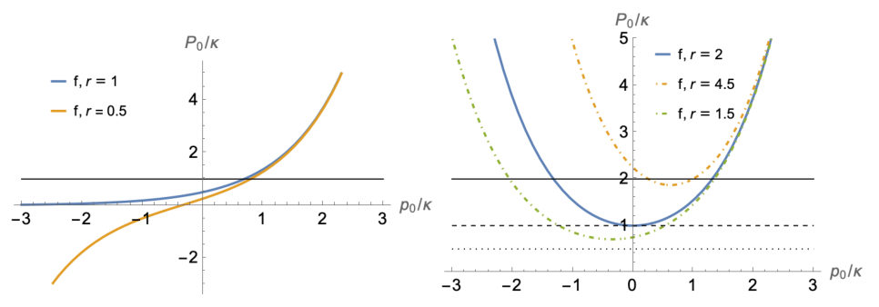
<figcaption class="paper-figure-caption"><b>Fig 1.</b> Figure 1: The solid curves show f  p0/κ; r  , defined in (3.4), plotted versus p0/κ for fixed</figcaption>
</figure>
</div>

<p><strong>Summary.</strong> This theoretical paper explores the kinematics of two-particle states in $\kappa$-Minkowski spacetime, a model incorporating quantum gravity effects via a deformation scale $\kappa$. The core finding is that the momentum composition law forces the appearance of distinct, branch-dependent correlations when the system enters a high-momentum regime. This mechanism is shown to be mathematically distinct from simpler nonrelativistic quantum models.</p>
<p><strong>Why it may be interesting.</strong> While not directly related to AMO, the mathematical techniques used—analyzing non-linear mappings, branch cuts, and symmetry deformations—are highly relevant to understanding effective Hamiltonians in strongly coupled or highly constrained quantum systems.</p>
<details>
<summary>Detailed structure</summary>
<p><strong>Main problem.</strong> The paper investigates the kinematical consequences of the Hopf-algebraic momentum composition law within $\kappa$-Minkowski spacetime, focusing on how this structure dictates two-particle momentum correlations.</p>
<p><strong>Main result.</strong> The structure leads to branch-dependent $\kappa$-deformed back-to-back momentum correlations in the high-momentum regime ($|\vec{P}| > \kappa$), which is a unique feature distinguishing it from standard nonrelativistic minimal-length models.</p>
<p><strong>Method.</strong> The analysis involves comparing two parameterizations of the curved momentum space (ordered-plane-wave labels $p_\mu$ vs. classical-basis momenta $P_\mu$) and analyzing the resulting nonlinear map and its associated coproduct structure.</p>
<p><strong>Model / system.</strong> The system is $\kappa$-Minkowski spacetime, governed by the $\kappa$-Poincaré Hopf algebra, which introduces a deformation scale $\kappa$ related to the Planck energy. The study focuses on the two-particle state structure derived from the coproduct constraint.</p>
<p><strong>Key observables.</strong> Deformed back-to-back momentum correlations, the branch-sensitive quantity $P^+ \equiv P_0 + P_4$, and the Jacobian determinant $\det \partial P_\mu / \partial p_
u$.</p>
<p><strong>Important parameters / regimes.</strong> Deformation scale $\kappa$, the classical four-momentum $P_\mu$, and the ordered-plane-wave labels $p_\mu$.</p>
<p><strong>Assumptions / limitations.</strong> The analysis assumes the existence of a regime where the inverse map $P 	o p$ is multi-valued (the two-branch regime), and it contrasts this with standard nonrelativistic models that lack this specific type of local inversion.</p>
<p><strong>Figures summary.</strong> Figures illustrate the function $f$ and the graphical solution of the inverse map, showing the transition from a single-valued to a two-branch structure as the momentum magnitude $|\vec{P}|$ crosses the threshold $\kappa$.</p>
<p><strong>Paper structure.</strong> The paper systematically compares the bicrossproduct basis (one-to-one map) with the classical basis (nonlinear map), derives the branch-resolving nature of the coproduct in the classical basis, and concludes by contrasting this structure with nonrelativistic models.</p>
</details>
<details>
<summary>Abstract</summary>
<p>We study a kinematical consequence of the Hopf-algebraic momentum composition law in $κ$-Minkowski spacetime. The same curved momentum space can be described in different coordinates. In the bicrossproduct basis the ordered-plane-wave labels are the translation-generator eigenvalues, so the relevant map is one-to-one. In the classical basis, instead, the translation eigenvalues $P_μ$ are nonlinearly related to the ordered-plane-wave labels $p_μ$. This relation can fail to be globally one-to-one in a high-momentum region. When a given classical-basis four-momentum admits more than one real auxiliary preimage, the branch-sensitive quantity $P_+\equiv P_0+P_4=κe^{p_0/κ}$ enters the coproduct and resolves the branches in two-particle states. Imposing the vanishing total-momentum constraint therefore gives branch-dependent $κ$-deformed back-to-back momentum correlations. In a single-branch regime this is just a deformed correlated product, while in a multibranch regime a state specified only by $P_μ$ can be expanded into distinct auxiliary branches. If $P_μ$ are taken as the directly meaningful momenta, the physical content is the resulting deformed correlation pattern. If the auxiliary variables $p_μ$ are assigned operational meaning, the same constrained state can be interpreted as a superposition over different auxiliary branches. We also compare this structure with standard regular self-adjoint nonrelativistic minimal-length models and find no analogous smooth local two-real-branch inversion on their physical domains.</p>
</details>
<p><sub><a href="#top">↑ back to top</a></sub></p>

<p><a id="paper-2606.03429"></a></p>
<h3 id="modeling-discrete-data-with-high-order-vector-potts-models"><a href="http://arxiv.org/abs/2606.03429v1">Modeling Discrete Data with High-Order Vector Potts Models</a></h3>
<p><strong>Authors:</strong> Aaron De Clercq, Merijn Moody, Clélia de Mulatier<br>
<strong>Type:</strong> theory · <strong>Category:</strong> disordered systems and neural networks · <strong>PDF:</strong> <a href="https://arxiv.org/pdf/2606.03429v1">https://arxiv.org/pdf/2606.03429v1</a><br>
<strong>Analysis basis:</strong> full PDF text, analyzed in chunks
<strong>Topic relevance:</strong> <code>entanglement &amp; information structure</code> <strong>2/5</strong> · <code>Keldysh / 2PI / non-Gaussian methods</code> <strong>1/5</strong> · <code>analog quantum simulation</code> <strong>1/5</strong> · <code>exotic spin models in light-matter</code> <strong>1/5</strong> · <code>methods for driven-dissipative</code> <strong>1/5</strong></p>
<div class="figure-strip-hint">↔ Scroll figures horizontally</div>
<div class="paper-figures-scroll">
<figure class="paper-figure-card">
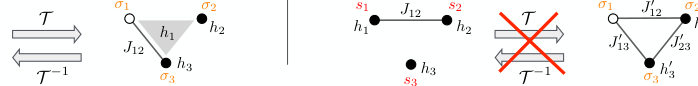
<figcaption class="paper-figure-caption"><b>Fig 1.</b> Figure 1: Example illustrating equivariant model selection for binary datasets ˆs = {s(i)}N i=1, where each datapoint s(i) is a state of a three-spin system s = (s1, s2, s3) ∈{−1, +1}3. A model selection procedure is equivariant if, for a basis transformation of the dataset T : s →σ, the models obtained from the model selection procedure on ˆs (Bob’s data) and ˆσ (Alice’s data) are related by the same transformation T . The left panel shows an example of an equivariant model selection procedure, for which the spin model found in Alice’s data representation corresponds to the model found in Bob’s representation rewritten in Alice’s basis, i.e. MAlice = T [MBob]. In the right panel, Alice and...</figcaption>
</figure>
<figure class="paper-figure-card">
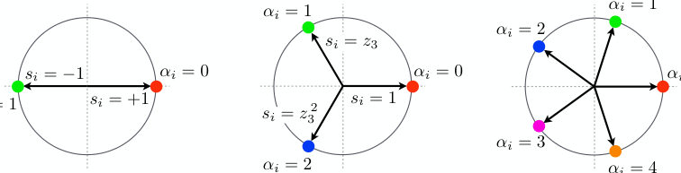
<figcaption class="paper-figure-caption"><b>Fig 2.</b> Figure 2: Representation for q-state spin variables in the complex plane for different values of q. For a given value of q, the color variable αi can take any integer value modulo q, αi ∈(Z/qZ)n. The corresponding q-state spin variable then takes the complex value si = z αi q , where zq is the first q-th root of unity. The spin variable can thus be represented in the complex plane by a random unit vector which can point in any of the q different directions corresponding to the q-th roots of unity. Observe that zq−αi q and z αi q are complex conjugate spin values, zq−αi q = (z αi q )∗, which correspond to mirrored directions of si with respect to the x-axis.</figcaption>
</figure>
<figure class="paper-figure-card">
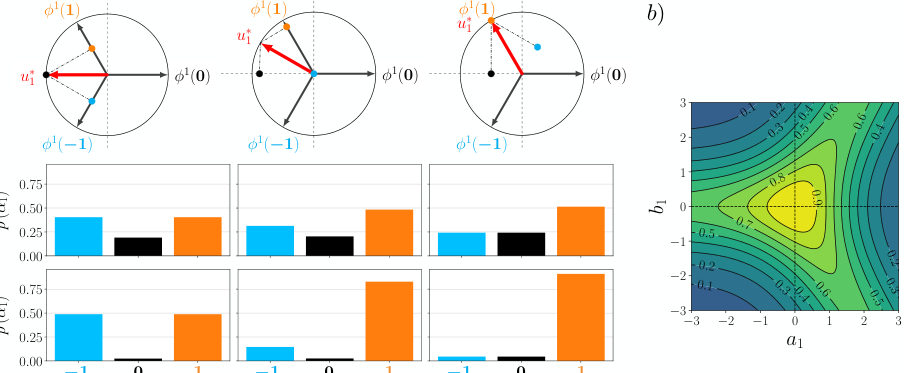
<figcaption class="paper-figure-caption"><b>Fig 3.</b> Figure 3: Example for q = 3. One-spin system α = (α1) modeled by a single interaction µ = (1), corresponding to the operator ϕ1(α) = exp  2iπ</figcaption>
</figure>
<figure class="paper-figure-card">
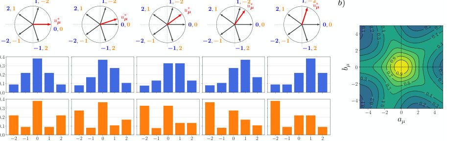
<figcaption class="paper-figure-caption"><b>Fig 4.</b> Figure 4: Example for q = 5 and two types of 1-body operator. One-spin system α = (α1) modeled by two examples of a single-spin interaction: an interaction µ = (1) corresponding to the operator ϕ1(α) = exp  2iπ</figcaption>
</figure>
<figure class="paper-figure-card">
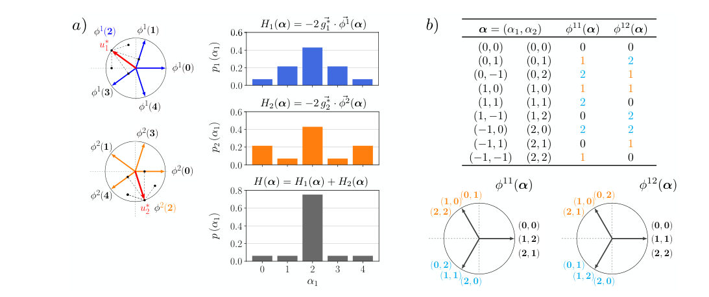
<figcaption class="paper-figure-caption"><b>Fig 5.</b> Figure 5: a) Example of a model for q = 5 with two types of one-body interactions. One-spin system α = (α1) modeled by the operators ϕ1(α) = zα1 5 and ϕ2(α) = z2α1 5 (same as in Fig. 4). At the top is the probability distribution p1(α1) of the model with operator ϕ1 (and its c.c.) parameterized by g∗ 1 = r1u∗ 1 with u∗ 1 = z 2 5 (see red arrow in the unit circle). In the middle is the distribution p2(α1) with operator ϕ2 (and c.c.) parameterized by g∗ 2 = r2u∗ 2 with u∗ 2 = z 4 5 . In both cases, the parameter is aligned with the direction of ϕµ(α1 = 2) and has a strength rµ = 0.5. At the bottom is the distribution p(α1) of the model containing both operators (and their c.c.) with the same...</figcaption>
</figure>
</div>

<p><strong>Summary.</strong> This work introduces $q$-state spin models as a generalized maximum entropy framework for analyzing high-dimensional discrete data. It establishes that these models are characterized by gauge invariance, allowing for the identification of equivalent underlying statistical structures. The authors provide practical methods, including closed-form evidence calculations, for selecting the most parsimonious model describing complex systems.</p>
<p><strong>Why it may be interesting.</strong> The rigorous mathematical treatment of model equivalence via gauge transformations and the connection to information geometry provides powerful tools for analyzing complex, high-dimensional data structures, which is relevant for characterizing emergent order in quantum many-body systems.</p>
<details>
<summary>Detailed structure</summary>
<p><strong>Main problem.</strong> The paper addresses the challenge of modeling high-dimensional discrete data to infer the underlying microscopic constraints governing complex systems.</p>
<p><strong>Main result.</strong> It develops a comprehensive framework using $q$-state spin models that are invariant under gauge transformations, allowing for robust model selection.</p>
<p><strong>Method.</strong> The authors employ maximum entropy principles, utilizing loop expansions and deriving closed-form expressions for the marginal likelihood of Minimally Complex Models (MCMs).</p>
<p><strong>Model / system.</strong> The model is a generalization of the Potts model to $q$-state spin systems defined on discrete variables, capturing arbitrary high-order correlations in data like protein sequences or neural activity.</p>
<p><strong>Key observables.</strong> Marginal likelihood, partition function ($Z_M(g)$), and the geometric complexity of the model.</p>
<p><strong>Important parameters / regimes.</strong> The number of states ($q$), the number of variables ($n$), and the interaction parameters ($g_\mu$).</p>
<p><strong>Assumptions / limitations.</strong> The analysis relies on the large $N$ limit for model selection and assumes the data can be effectively described by the moments captured by the spin model.</p>
<p><strong>Figures summary.</strong> Figures illustrate gauge transformations relating different model representations and show comparisons of entropy values for different discretization schemes.</p>
<p><strong>Paper structure.</strong> The paper progresses from defining the $q$-state spin models and their relation to discrete Fourier analysis, through the mathematical framework of gauge invariance, to deriving the closed-form evidence for MCMs, and finally applying this to model selection.</p>
</details>
<details>
<summary>Abstract</summary>
<p>Modeling high-dimensional data is challenging, yet essential to understanding many complex systems. Maximum entropy models such as Ising and Potts models have been used extensively to capture pairwise interactions from correlation patterns in data, allowing to infer graphical representations of complex systems from observations (e.g., from protein sequences or neural population activity). Recently, there has been growing interest in modeling higher-order correlation patterns involving simultaneously three or more variables. While progress has been made in binary data with high-order Ising models, we extend this framework to the more general case of discrete data.   We introduce q-state spin models, a complete family of maximum entropy models that generalize the vector Potts model to include long-range and arbitrary high-order interactions. In the pairwise case, our models allow for more diverse interaction types compared to the standard vector Potts model. We discuss their statistical interpretation with examples and relate them to discrete Fourier analysis. Using a loop expansion of the partition function, we show that the statistical properties of spin models are fully captured by the algebraic structure of their interactions. We define gauge transformations under which this structure, and thus the partition function, remains invariant. Models equivalent under gauge transformations can be seen as different representations of the same abstract statistical model, despite generally having interactions of different orders, extending results from the binary case. For practical application to data analysis, we focus on a subset of models known in the binary case as Minimally Complex Models, generalizing them to discrete data. We obtain a closed-form expression for the marginal likelihood of these models, enabling fast model selection. We illustrate their use with simple real-world examples.</p>
</details>
<p><sub><a href="#top">↑ back to top</a></sub></p>

<p><a id="paper-2606.03445"></a></p>
<h3 id="predicting-the-conditions-for-observing-the-mpemba-effect"><a href="http://arxiv.org/abs/2606.03445v1">Predicting the conditions for observing the Mpemba effect</a></h3>
<p><strong>Authors:</strong> Yue Liu, Tan Van Vu, Raphaël Chétrite, Frédéric van Wijland, Hisao Hayakawa<br>
<strong>Type:</strong> theory · <strong>Category:</strong> statistical mechanics · <strong>PDF:</strong> <a href="https://arxiv.org/pdf/2606.03445v1">https://arxiv.org/pdf/2606.03445v1</a><br>
<strong>Analysis basis:</strong> full PDF text, analyzed in chunks
<strong>Topic relevance:</strong> <code>non-equilibrium dynamics</code> <strong>2/5</strong> · <code>Keldysh / 2PI / non-Gaussian methods</code> <strong>1/5</strong> · <code>driven-dissipative phase transition</code> <strong>1/5</strong> · <code>methods for driven-dissipative</code> <strong>1/5</strong> · <code>non-equilibrium universality</code> <strong>1/5</strong></p>
<div class="figure-strip-hint">↔ Scroll figures horizontally</div>
<div class="paper-figures-scroll">
<figure class="paper-figure-card">
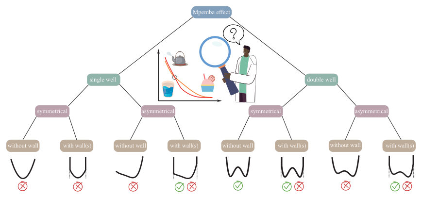
<figcaption class="paper-figure-caption"><b>Fig 1.</b> FIG. 1. Summary of the conditions for observing the Mpemba effect across various potential landscapes. The decision tree categorizes one-dimensional potentials based on the number of wells (single well vs. double well), their parity (symmetrical vs. asymmetrical), and the boundary conditions (without wall vs. with wall(s)). The green checkmark and red cross denote the guaranteed presence and absolute absence of the Mpemba effect, respectively. Simultaneous checkmark and cross mean that the existence of the effect is conditionally dependent on the position of the wall(s).</figcaption>
</figure>
<figure class="paper-figure-card">
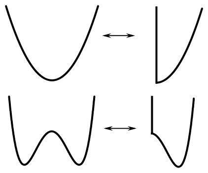
<figcaption class="paper-figure-caption"><b>Fig 2.</b> FIG. 2. (a) A symmetric single-well potential is equivalent to an asymmetric single-well potential with a wall at the center. (b) The symmetric double-well potential is equivalent to an asymmetric single-well potential with a wall at the center of the symmetric potential.</figcaption>
</figure>
<figure class="paper-figure-card">
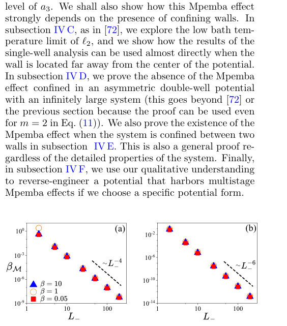
<figcaption class="paper-figure-caption"><b>Fig 3.</b> FIG. 3. (a) The inverse temperature βM is shown as a function of L−for various bath temperatures in a quartic po- tential V (x) ∼x4 with a hard wall at x = −L−= −LBL. (b) Same as in which the quartic potential is replaced by a sextic potential V (x) ∼x6. In both (a) and (b), the analyt- ical result, Eq. (45), obtained for large β and L−is shown as a dashed line as a guide for the eye. Remarkably, no no- table deviations are observed, even very far from the regime in which the analytical expression was derived. We have used L+ = 2L−(LBR = 2LBL).</figcaption>
</figure>
<figure class="paper-figure-card">
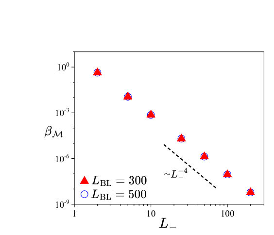
<figcaption class="paper-figure-caption"><b>Fig 4.</b> FIG. 4. Plot of the Mpemba inverse temperature βM as a function of the position L−of the soft wall is shown for two different simulation boxes LBL = 300 (red solid triangles) and 500 (blue open circles), and the result is independent of LBL. The dashed line shows excellent agreement with our prediction. We have used m = 4, a bath temperature β = 1, and the soft soft wall grows as V (x) ∼x6 (q = 6) for −LBR &gt; x &gt; −L−. Here, we have used L+ = LBR = 2LBL.</figcaption>
</figure>
<figure class="paper-figure-card">
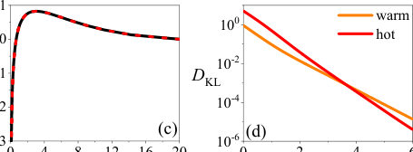
<figcaption class="paper-figure-caption"><b>Fig 5.</b> FIG. 5. (a) The overlap coefficient a3 as a function of βi for the symmetric double-well potential constructed by a piece- wise harmonic potential, which exhibits a non-monotonic be- havior, indicating the existence of the (inverse) Mpemba ef- fect. The analytical result (black solid line) is consistent with the numerical result (red dashed line). (b) The time evolution of the KL divergence for cold initial temperature (βi = 20, blue solid line) and warm initial temperature (βi = 8, orange solid line), which cross each other, thereby confirming the (in- verse) Mpemba effect. The inverse bath temperature is set to β = 4 for both panels (a) and (b). (c) The same as (a) but β = 20. (d) The...</figcaption>
</figure>
</div>

<p><strong>Summary.</strong> This theoretical study predicts the necessary structural conditions for observing the Mpemba effect in overdamped Langevin systems. It shows that the effect is fundamentally governed by the presence of boundaries (walls) rather than the internal details of the potential wells. The analysis uses spectral methods to classify potentials and engineer systems exhibiting this counterintuitive thermal relaxation behavior.</p>
<p><strong>Why it may be interesting.</strong> This work provides a rigorous, mathematically grounded classification of the Mpemba effect, linking it directly to boundary conditions and spectral properties of the underlying dynamics, which is highly relevant for understanding non-equilibrium relaxation in complex systems.</p>
<details>
<summary>Detailed structure</summary>
<p><strong>Main problem.</strong> The paper investigates the fundamental structural features of the energy landscape required for the Mpemba effect, a counterintuitive phenomenon where a hotter system relaxes faster than a colder one.</p>
<p><strong>Main result.</strong> The existence of the Mpemba effect is primarily driven by the presence of boundaries (hard or soft walls), rather than the specific internal structure of the potential landscape. The analysis provides a unified classification across single- and double-well potentials.</p>
<p><strong>Method.</strong> The study employs spectral decomposition of the Fokker-Planck operator and analyzes the behavior of the first nontrivial eigenmode, relating the effect to the non-monotonic dependence of the overlap coefficient on initial temperature.</p>
<p><strong>Model / system.</strong> The system is modeled using one-dimensional overdamped Langevin dynamics for a particle in a potential V(x), governed by the Fokker-Planck equation. The analysis covers single-well and double-well potentials, considering the influence of hard or soft boundaries.</p>
<p><strong>Key observables.</strong> Overlap coefficient ($a_2$), Mpemba temperature ($eta_M$), and the behavior of the first nontrivial eigenmode.</p>
<p><strong>Important parameters / regimes.</strong> Initial temperature ($T_i$) or inverse temperature ($eta_i$), and the presence/location of boundaries ($L_-, L_+$).</p>
<p><strong>Assumptions / limitations.</strong> The analysis relies on asymptotic approximations, particularly in the low-bath-temperature regime, and assumes the potential grows fast enough at the boundaries.</p>
<p><strong>Figures summary.</strong> Figures illustrate decision trees summarizing conditions for the Mpemba effect, and plots show the dependence of $eta_M$ on wall separation for various potential types.</p>
<p><strong>Paper structure.</strong> The paper progresses by establishing the mathematical framework using the Fokker-Planck operator, deriving the condition for the Mpemba effect via the overlap coefficient $a_2$, and finally classifying the necessary structural elements (boundaries) required for the effect to manifest.</p>
</details>
<details>
<summary>Abstract</summary>
<p>The Mpemba effect, a counterintuitive phenomenon where a hotter system relaxes faster than a colder one, has been widely observed in various nonequilibrium systems. Despite this progress, the fundamental structural features of the energy landscape required for its emergence remain a subject of debate. In this study, we investigate the conditions for the Mpemba effect within one-dimensional overdamped Langevin dynamics. We classify the potential landscapes based on the presence of single or double wells, their symmetry properties, and the existence of walls. We establish that the existence of the effect is primarily driven by the presence of boundaries, either hard or soft, rather than the specific internal structure of the potential landscape, such as metastability or the number of minima. By employing a spectral decomposition of the Fokker-Planck operator, we analyze the behavior of the first nontrivial eigenmode and demonstrate that its derivative acts as a Dirac delta peak in the low-temperature regime. This helps us elucidate the mechanism underlying the Mpemba effect: it appears as the interplay between this behavior and the initial population dynamics in a non-trivial way induced by the presence of the wall. Our analysis provides a unified classification across single- and double-well potentials, highlighting the crucial role of boundary conditions and asymmetry. Furthermore, we demonstrate that this framework allows for the engineering of potential landscapes capable of producing multistage Mpemba transitions.</p>
</details>
<p><sub><a href="#top">↑ back to top</a></sub></p>

<p><a id="paper-2606.03147"></a></p>
<h3 id="quantum-optimization-algorithms-for-strongly-correlated-many-body-systems"><a href="http://arxiv.org/abs/2606.03147v1">Quantum Optimization Algorithms for Strongly Correlated Many-Body Systems</a></h3>
<p><strong>Authors:</strong> G. E. L. Pexe, L. A. M. Rattighieri, P. M. Prado, A. R. Fritsch, F. F. Fanchini<br>
<strong>Type:</strong> theory · <strong>Category:</strong> strongly correlated electrons · <strong>PDF:</strong> <a href="https://arxiv.org/pdf/2606.03147v1">https://arxiv.org/pdf/2606.03147v1</a><br>
<strong>Analysis basis:</strong> full PDF text, analyzed in chunks
<strong>Topic relevance:</strong> <code>analog quantum simulation</code> <strong>2/5</strong> · <code>entanglement &amp; information structure</code> <strong>2/5</strong> · <code>non-equilibrium dynamics</code> <strong>1/5</strong> · <code>quantum measurements</code> <strong>1/5</strong></p>
<div class="figure-strip-hint">↔ Scroll figures horizontally</div>
<div class="paper-figures-scroll">
<figure class="paper-figure-card">
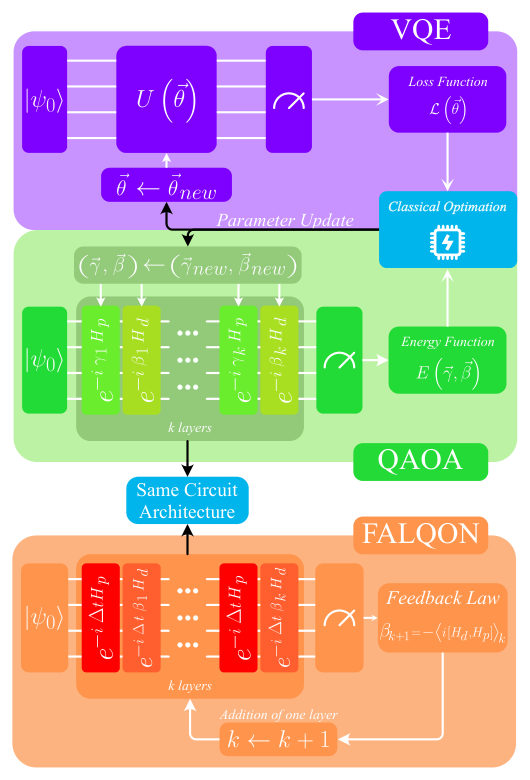
<figcaption class="paper-figure-caption"><b>Fig 1.</b> Figure 1. Comparative schematic of the main quantum optimization algorithms from a NISQ perspective. (a) In VQE, a variational circuit prepares an ansatz and measures the expectation value of the Hamiltonian, while a classical optimizer iteratively updates the parameters. (b) In QAOA, an alternating sequence of evolutions under the problem Hamiltonian Hp and the mixer Hamiltonian Hd is applied for a fixed depth p, followed by classical optimization of the angles. (c) In FALQON, the dynamics are guided by feedback based on measuring the commutator i[Hd, Hp], eliminating the external classical optimizer and introducing an iterative evolution with progressive growth of the circuit depth.</figcaption>
</figure>
<figure class="paper-figure-card">
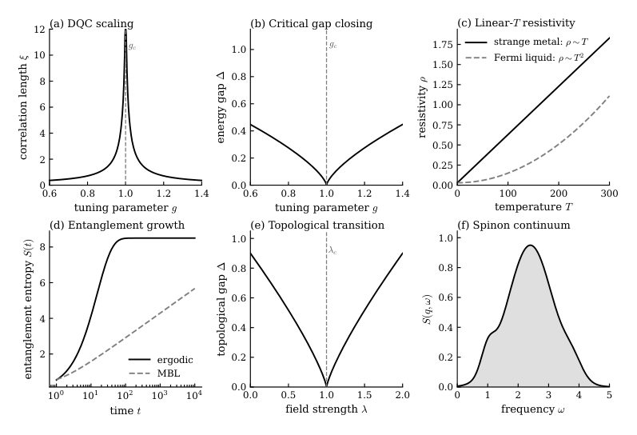
<figcaption class="paper-figure-caption"><b>Fig 2.</b> Figure 2. Phenomenological signatures of quantum phase transitions and strongly correlated states targeted for investigation via quantum algorithms in the NISQ regime. (a) Divergence of the correlation length ξ and (b) algebraic closing of the energy gap ∆in the vicinity of a Deconfined Quantum Criticality (DQC) point gc. (c) Anomalous transport in the strange metal phase, evidenced by T-linear resistivity (ρ ∝T), in contrast to the quadratic dependence of a Fermi liquid. (d) Non-equilibrium dynamics of the entanglement entropy S(t) following a global quench: the Many-Body Localization (MBL) phase exhibits ultra-slow logarithmic growth, while the ergodic phase rapidly saturates following a...</figcaption>
</figure>
<figure class="paper-figure-card">
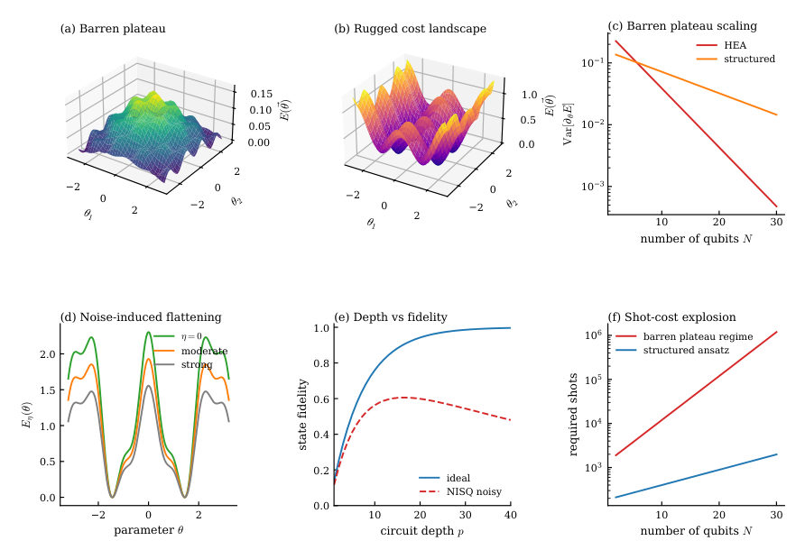
<figcaption class="paper-figure-caption"><b>Fig 3.</b> Figure 3. Representation of the fundamental challenges for variational quantum algorithms in condensed matter within the NISQ regime. (a) Visualization of a barren plateau, characterized by an exponentially flat cost landscape that renders gradient-based methods unfeasible. (b) Rugged cost landscape exhibiting multiple spurious local minima that trap classical optimizers. (c) Scaling of the gradient variance Var[∂θE] with the number of qubits N, demonstrating the severe exponential decay for Hardware Efficient Ans¨atze (HEA) compared to structured circuits. (d) Effect of experimental noise (η) on the flattening of the energy landscape and the displacement of the global minimum. (e)...</figcaption>
</figure>
</div>

<p><strong>Summary.</strong> This perspective article analyzes the use of quantum optimization algorithms to study phase transitions in strongly correlated quantum systems. It critiques Variational Quantum Algorithms for suffering from barren plateaus and proposes Feedback-based Quantum Algorithms as a more robust alternative. The work highlights the necessity of physics-informed circuit design to achieve quantum advantage in condensed matter physics.</p>
<p><strong>Why it may be interesting.</strong> It directly addresses the computational bottleneck in simulating complex quantum matter, proposing a specific algorithmic pathway (FQAs) to overcome the limitations of current NISQ hardware for studying exotic phases.</p>
<details>
<summary>Detailed structure</summary>
<p><strong>Main problem.</strong> Investigating phase transitions in strongly correlated quantum many-body systems, which are intractable for classical simulation due to exponential Hilbert space growth or the fermionic sign problem.</p>
<p><strong>Main result.</strong> Feedback-based quantum algorithms (FQAs) are argued to provide geometrically more robust trajectories for navigating the energy landscape than traditional Variational Quantum Algorithms (VQAs) in the NISQ era.</p>
<p><strong>Method.</strong> The paper reviews and compares VQAs (VQE, QAOA) against FQAs (like FALQON), focusing on their application to quantum simulation.</p>
<p><strong>Model / system.</strong> The study covers various strongly correlated models, including the SYK model (strange metals), the $J-Q$ model (DQC), the MBL model (disordered systems), and the Toric Code (topological phases).</p>
<p><strong>Key observables.</strong> Energy expectation value, correlation length ($\xi$), entanglement entropy ($S$), dynamic structure factor ($S(q, \omega)$), and gap closing ($\Delta$).</p>
<p><strong>Important parameters / regimes.</strong> NISQ era constraints, circuit depth, noise levels, and the ratio of coupling constants in specific Hamiltonians.</p>
<p><strong>Assumptions / limitations.</strong> The primary limitations discussed are the exponential barren plateaus in VQAs and the sensitivity of all quantum methods to noise and circuit depth.</p>
<p><strong>Figures summary.</strong> Figures compare VQE, QAOA, and FALQON approaches, illustrating challenges like barren plateaus, rugged cost landscapes, and the depth vs. fidelity trade-off.</p>
<p><strong>Paper structure.</strong> The paper progresses by establishing the classical limitations, reviewing VQAs, introducing FQAs as an improvement, and then applying these methods to specific condensed matter problems like DQC, MBL, and QSLs.</p>
</details>
<details>
<summary>Abstract</summary>
<p>This perspective article analyzes the potential and critical challenges of employing quantum optimization algorithms to investigate phase transitions in quantum many-body systems during the Noisy Intermediate-Scale Quantum era. The simulation of strongly correlated systems is frequently intractable on classical computers due to the exponential growth of the Hilbert space and the fermionic sign problem. In this context, we review and compare the performance of traditional Variational Quantum Algorithms, such as the Variational Quantum Eigensolver and the Quantum Approximate Optimization Algorithm, against emerging heuristic approaches, specifically Feedback-based Quantum Algorithms, such as FALQON. We explore the applicability of these methods in the study of open phenomena in condensed matter physics, including Deconfined Quantum Criticality, strange metals, Many-Body Localization, topological phase transitions, and quantum spin liquids. We discuss how fundamental operational bottlenecks, notably expressibility- and noise-induced barren plateaus, severely compromise gradient-based optimization. We conclude that deterministic feedback-guided methods provide geometrically more robust trajectories for navigating the energy landscape of these systems, arguing that further advancement in the field will rely on deep hybridization and physics-informed circuit co-design towards fault tolerance.</p>
</details>
<p><sub><a href="#top">↑ back to top</a></sub></p>

<p><a id="paper-2606.03451"></a></p>
<h3 id="magnetic-field-effects-on-spin-split-band-and-magnon-transport-in-altermagnets-and-emergent-compensated-ferrimagnets"><a href="http://arxiv.org/abs/2606.03451v1">Magnetic field effects on spin-split band and magnon transport in altermagnets and emergent compensated ferrimagnets</a></h3>
<p><strong>Authors:</strong> Kazushi Aoyama, Hikaru Kawamura<br>
<strong>Type:</strong> theory · <strong>Category:</strong> strongly correlated electrons · <strong>PDF:</strong> <a href="https://arxiv.org/pdf/2606.03451v1">https://arxiv.org/pdf/2606.03451v1</a><br>
<strong>Analysis basis:</strong> full PDF text, analyzed in chunks
<strong>Topic relevance:</strong> <code>analog quantum simulation</code> <strong>2/5</strong> · <code>Keldysh / 2PI / non-Gaussian methods</code> <strong>1/5</strong> · <code>non-equilibrium dynamics</code> <strong>1/5</strong> · <code>spintronics-quantum-optics interface</code> <strong>1/5</strong></p>
<div class="figure-strip-hint">↔ Scroll figures horizontally</div>
<div class="paper-figures-scroll">
<figure class="paper-figure-card">
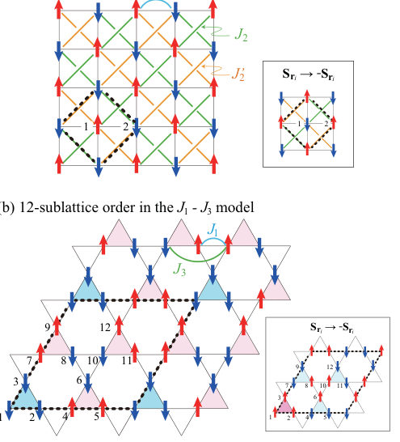
<figcaption class="paper-figure-caption"><b>Fig 1.</b> FIG. 1: Schematic pictures of the models and their collinear antiferromagnetic ground states at zero field, where the mag- netic unit cells are indicated by dotted lines. (a) The 2- sublattice altermagnetic state in the J1-J2-J′ 2 model on the square lattice, where cyan, green, and orange lines represent the exchange interactions J1, J2, and J′ 2, respectively. (b) The 12-sublattice state with compensated ferrimagnetic nature in the J1-J3 model on the kagome lattice, where cyan and green curves represent J1 and J3, respectively. In (b), pink and cyan upward triangles possess the local magnetization of +1 (two-up and one-down) and −3 (three-down), respectively. In each of (a) and (b), numbers...</figcaption>
</figure>
<figure class="paper-figure-card">
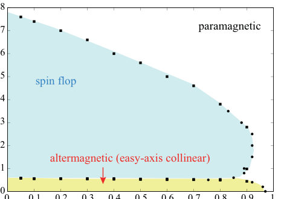
<figcaption class="paper-figure-caption"><b>Fig 2.</b> FIG. 2: Temperature and magnetic-field phase diagram of the easy-axis altermagnet on the square lattice with J2/J1 = −0.5, J′ 2/J1 = −0.25, and D/J1 = 0.02. Yellow and cyan regions denote the stability regions of the easy-axis collinear and spin-flop states, respectively. The result is obtained in the MC simulation.</figcaption>
</figure>
<figure class="paper-figure-card">
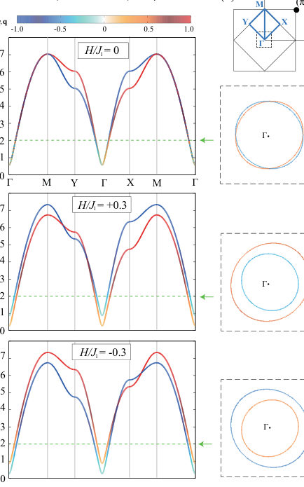
<figcaption class="paper-figure-caption"><b>Fig 3.</b> FIG. 3: Field dependence of the magnon band in the alter- magnetic collinear state with the 2 sublattice structure (see the yellow region in Fig. 2). (a)-(c) The magnon dispersions at H/J1 = 0, +0.3, and −0.3 (from top to bottom) along the path connecting high symmetry points shown in Fig. 3 (d), where the color represents the spin polarization of the magnon hn,q (reddish and bluish colors represent up and down spins, respectively). In each figure, the right panel shows the cross section of the magnon band at ǫn,q/J1 = 2, where the box enclosed by the dashed lines corresponds to the one near the Γ point in (d). In (d), the inner diamond denotes the Bril- louin zone. The interaction...</figcaption>
</figure>
<figure class="paper-figure-card">
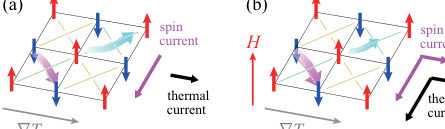
<figcaption class="paper-figure-caption"><b>Fig 4.</b> FIG. 5: A schematic image of the origin of the longitudinal and transverse responses in the altermagnetic states at (a) H/J1 = 0 and (b) H/J1 = +0.3, where magenta and cyan arrows represent the flow of the positively and negatively po- larized magnons, respectively.</figcaption>
</figure>
<figure class="paper-figure-card">
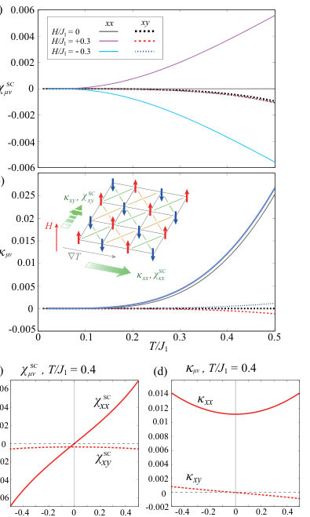
<figcaption class="paper-figure-caption"><b>Fig 5.</b> FIG. 4: Spin and thermal currents driven by thermal gradient in the altermagnetic state [see the system setup shown in the inset of (b)]. (a) Temperature dependence of the spin-current conductivity χSC µν and (b) that of the thermal conductivity κµν, where black, reddish, and bluish solid (dashed) curves represent to the longitudinal xx (transverse xy) components at H/J1 = 0, +0.3, and −0.3, respectively. Other parameters are the same as those in Figs. 2 and 3. In (b), the xx com- ponents for H/J1 = ±0.3 (magenta and cyan curves) exactly overlap. (c) and (d) Associated field dependences of (c) χSC µν and (d) κµν at T/J1 = 0.4. χSC µν and κµν are normalized by S3J1/γ and S4J2 1 /γ,...</figcaption>
</figure>
</div>

<p><strong>Summary.</strong> This theoretical work examines how magnetic fields influence spin-split magnon bands in altermagnets and compensated ferrimagnets. By analyzing the magnon Hamiltonian and calculating transport coefficients, the authors demonstrate that the field induces Zeeman-like shifts and that the specific magnetic symmetry dictates the resulting spin and thermal current response. This is crucial for understanding spin-charge/heat transport in complex magnetic materials.</p>
<p><strong>Why it may be interesting.</strong> The study connects fundamental magnetic ordering (altermagnetism/ferrimagnetism) to measurable transport phenomena (spin/heat currents) under external fields, providing theoretical insights into emergent quantum magnet behavior.</p>
<details>
<summary>Detailed structure</summary>
<p><strong>Main problem.</strong> The paper investigates how an external magnetic field affects the spin-split magnon band structure and the resulting spin and thermal transport properties in altermagnets and compensated ferrimagnets.</p>
<p><strong>Main result.</strong> The study shows that the magnetic field induces Zeeman-like shifts in the magnon bands, and the specific magnetic structure dictates whether the resulting spin/thermal conductivity exhibits an asymmetric field dependence or a purely longitudinal response.</p>
<p><strong>Method.</strong> The analysis uses theoretical modeling, transforming the spin Hamiltonian into a Bogoliubov magnon Hamiltonian, and calculating transport coefficients ($\chi^{SC}, \kappa$) using linear response theory.</p>
<p><strong>Model / system.</strong> The systems modeled are altermagnets (using the $J_1-J_2-J'_2$ model on a square lattice) and compensated ferrimagnets (using the $J_1-J_3$ model on a kagome lattice). Both exhibit spin splitting without net magnetization.</p>
<p><strong>Key observables.</strong> Spin-conductivity ($\chi^{SC}<em>{\mu
u}$), thermal conductivity ($\kappa</em>{\mu
u}$), magnon band dispersion, and spin polarization of magnon bands.</p>
<p><strong>Important parameters / regimes.</strong> External magnetic field ($H$), easy-axis anisotropy ($D$), and lattice coupling constants ($J_1, J_2, J_3$).</p>
<p><strong>Assumptions / limitations.</strong> The analysis assumes the energy scale of the magnetic field is smaller than the anisotropy gap, and transport coefficients are calculated using the relaxation-time approximation.</p>
<p><strong>Figures summary.</strong> Figures illustrate the field dependence of magnon bands (showing shifts), and the resulting spin/thermal currents driven by thermal gradients in both altermagnetic and ferrimagnetic states.</p>
<p><strong>Paper structure.</strong> The paper progresses from defining the physical models and Hamiltonians for the two magnetic systems, to calculating the magnon band structure and spin polarization, and finally analyzing the resulting spin and thermal transport coefficients as a function of magnetic field and temperature.</p>
</details>
<details>
<summary>Abstract</summary>
<p>In altermagnets and fully compensated ferrimagnets, not only the electron band but also the magnon band exhibits spin splitting without net magnetization, which enables thermal activation of the magnon spin current. Here, we theoretically investigate magnetic field effects on the magnon properties of these antiferromagnets in the presence of a weak easy-axis anisotropy which makes the collinear states robust against the magnetic field. For the altermagnet and compensated ferrimagnet, we analyze a 2 sublattice order in the $J_1$-$J_2$-$J_2^\prime$ model on the square lattice and a triple-${\bf Q}$ 12-sublattice order in the $J_1$-$J_3$ model on the kagome lattice, respectively, each accompanied by $d$-wave and $s$-wave spin splitting at zero field. It is shown that for positive (negative) magnetic field $H$ whose energy scale is smaller than the anisotropy gap, the up- and down-spin magnon bands are shifted to lower (higher) and higher (lower) energies, respectively, similarly to the Zeeman coupling in electron systems. In the altermagnet, with increasing field, the $d$-wave splitting tends to be deformed into the $s$-wave one, which is reflected as the change in the direction of the spin current generated by thermal gradient. In the compensated ferrimagnet, the $s$-wave nature, i.e., the population imbalance between the up- and down-spin magnons at $H=0$, results in an asymmetric field dependence of the longitudinal spin and thermal conductivities.</p>
</details>
<p><sub><a href="#top">↑ back to top</a></sub></p>

<p><a id="paper-2606.02880"></a></p>
<h3 id="towards-efficient-synthesis-of-quantum-graph-states-by-fusing-graph-motifs"><a href="http://arxiv.org/abs/2606.02880v1">Towards Efficient Synthesis of Quantum Graph States by Fusing Graph Motifs</a></h3>
<p><strong>Authors:</strong> Tingxiang Ji, Hansika Weerasena, Demitry Farfurnik, Jianqing Liu<br>
<strong>Type:</strong> theory · <strong>Category:</strong> quantum information and computing · <strong>PDF:</strong> <a href="https://arxiv.org/pdf/2606.02880v1">https://arxiv.org/pdf/2606.02880v1</a><br>
<strong>Analysis basis:</strong> full PDF text, analyzed in chunks
<strong>Topic relevance:</strong> <code>analog quantum simulation</code> <strong>2/5</strong> · <code>QC/QI experiment</code> <strong>1/5</strong> · <code>entanglement &amp; information structure</code> <strong>1/5</strong> · <code>quantum optics experiment</code> <strong>1/5</strong></p>
<div class="figure-strip-hint">↔ Scroll figures horizontally</div>
<div class="paper-figures-scroll">
<figure class="paper-figure-card">
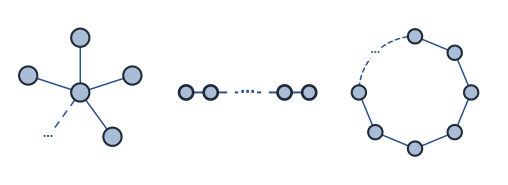
<figcaption class="paper-figure-caption"><b>Fig 1.</b> Fig. 1: Resource graph state motifs used in this work. (a) Star motif: a GHZ-type graph state with one central qubit connected to N −1 others, totaling N qubits. (b) Linear motif: a path-like graph state with N qubits connected sequentially. (c) Ring motif: a cyclic graph state with N qubits. These three motifs serve as the primitive building blocks in the proposed CFD framework.</figcaption>
</figure>
<figure class="paper-figure-card">
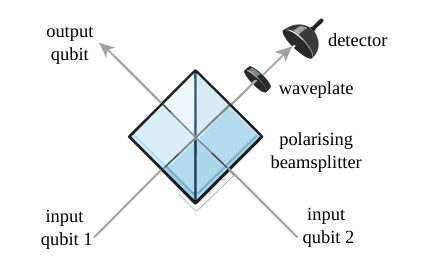
<figcaption class="paper-figure-caption"><b>Fig 2.</b> Fig. 2: Schematic of the Type-I fusion in a photonic imple- mentation. Two input qubits, one from each graph state, are interfered on a polarising beamsplitter followed by waveplate and detector, probabilistically merging the two fragments into a larger graph state with success probability 1/2.</figcaption>
</figure>
<figure class="paper-figure-card">
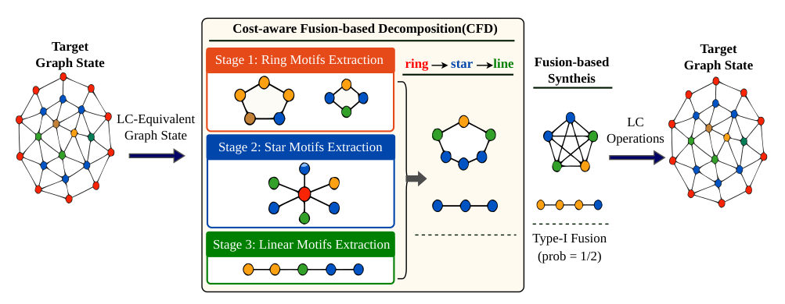
<figcaption class="paper-figure-caption"><b>Fig 3.</b> Fig. 3: Overview of the proposed Cost-aware Fusion-based Decomposition (CFD) framework. Given a target graph state, CFD first identifies the LC-equivalent graph state with the minimum number of edges, then decomposes it into ring, star, and linear motifs through three successive extraction stages. The resulting motifs are realized as photonic resource states and connected via Type-I fusion operations to synthesize the LC-equivalent graph state, from which the target graph state is recovered by applying LC operations in the reverse order.</figcaption>
</figure>
<figure class="paper-figure-card">
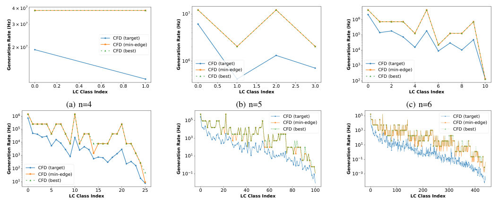
<figcaption class="paper-figure-caption"><b>Fig 4.</b> Fig. 4: Photonic generation rates for graph states of size n = 4 to 9 across LC equivalence classes using the CFD framework. For each target graph state, CFD is applied to every graph state in its LC equivalence class and the generation rate is computed from the resulting motif decomposition. The plotted quantities correspond to the three cases defined in the Evaluation Method: CFD (min-edge), the generation rate obtained by applying CFD to the LC-equivalent graph state with the minimum number of edges; CFD (target), the generation rate obtained by applying CFD directly to the target graph state; and CFD (best), the minimum resource overhead achieved by CFD across the LC equivalence class.</figcaption>
</figure>
<figure class="paper-figure-card">
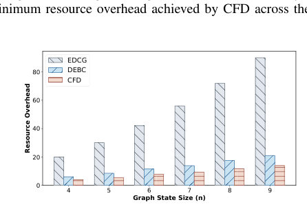
<figcaption class="paper-figure-caption"><b>Fig 5.</b> Fig. 5: Resource overhead comparison of EDCG, DEBC, and the proposed CFD framework across graph states of size n = 4 to 9. EDCG incurs a fixed overhead of n(n −1) regardless of target topology, while DEBC and CFD both take the minimum-edge LC-equivalent graph state as input. Lower resource overhead corresponds to higher photonic generation rate.</figcaption>
</figure>
</div>

<p><strong>Summary.</strong> This paper introduces a novel, cost-aware decomposition method (CFD) to overcome the exponential resource limitations in synthesizing photonic graph states. By leveraging local Clifford equivalence and decomposing the target state into fundamental motifs (ring, star, linear), the authors significantly reduce resource overhead. This provides a practical and scalable pathway toward building complex quantum circuits using photonic hardware.</p>
<p><strong>Why it may be interesting.</strong> This work provides a concrete, scalable algorithmic blueprint for realizing complex quantum resources (graph states) in photonic systems, directly impacting the feasibility of measurement-based quantum computation.</p>
<details>
<summary>Detailed structure</summary>
<p><strong>Main problem.</strong> The core challenge is efficiently synthesizing complex photonic graph states required for advanced quantum computing and sensing applications.</p>
<p><strong>Main result.</strong> The proposed Cost-aware Fusion-based Decomposition (CFD) framework achieves up to an 84.6% reduction in resource overhead compared to baseline methods, leading to massive improvements in the photonic generation rate.</p>
<p><strong>Method.</strong> The method involves a three-stage heuristic decomposition: first, finding an LC-equivalent state with minimum edges; second, decomposing this state into fundamental motifs (ring, star, linear); and third, assembling these motifs via Type-I fusion operations.</p>
<p><strong>Model / system.</strong> The work focuses on photonic graph states, where qubits are vertices and CZ entangling operations form the edges. The synthesis is performed on a photonic platform using Type-I fusion operations.</p>
<p><strong>Key observables.</strong> Resource overhead (total photon cost $M$), photonic generation rate $R(G)$, and physical-qubit consumption.</p>
<p><strong>Important parameters / regimes.</strong> The exponential dependence of the generation rate on the number of fusion operations ($k$) and the resource cost.</p>
<p><strong>Assumptions / limitations.</strong> The primary assumption is that selecting the LC-equivalent graph state with the minimum number of edges serves as a highly effective proxy for near-optimal synthesis.</p>
<p><strong>Figures summary.</strong> Figures illustrate the three resource motifs (Star, Linear, Ring), the schematic of the Type-I fusion process, and quantitative comparisons showing CFD's superior performance in resource overhead and generation rate across various graph sizes and lattice structures.</p>
<p><strong>Paper structure.</strong> The paper establishes the problem limitations, introduces the concept of LC equivalence, details the CFD heuristic framework (motif decomposition $
ightarrow$ fusion $
ightarrow$ LC operations), and validates the approach through extensive numerical comparisons against baseline constructions on lattice and general graph states.</p>
</details>
<details>
<summary>Abstract</summary>
<p>Photonic graph states with advanced topologies can enable measurement-based quantum computing, distributed quantum sensing, and quantum interconnects. However, the efficient generation of photonic graph states is limited by the probabilistic nature of photonic entangling operations and the exponential dependence of generation rate on resource cost. In this work, we study photonic graph state synthesis as a cost-aware decomposition problem, exploiting local Clifford (LC) equivalence to identify more synthesis-friendly representations of the target graph state before decomposition. Specifically, we propose Cost-aware Fusion-based Decomposition (CFD), a three-stage heuristic framework that decomposes a target graph state into ring, star, and linear motifs, and assembles them via Type-I fusion operations to minimize fusion overhead and physical-qubit consumption. We further show that selecting the LC-equivalent graph state with the minimum number of edges provides a highly effective proxy for near-optimal synthesis: in many cases it matches the best generation rate observed within the LC equivalence class under CFD, and in most remaining cases it remains close to it. Numerical evaluations on graph state orbit data and 2D and 3D lattice graph states demonstrate that CFD achieves up to 84.6\% reduction in resource overhead compared to baseline constructions, and yields improvements in photonic generation rate spanning multiple orders of magnitude. These results suggest that combining structure-aware motif decomposition with LC equivalence is a practical and scalable strategy for photonic graph state synthesis.</p>
</details>
<p><sub><a href="#top">↑ back to top</a></sub></p>

<p><a id="paper-2606.02838"></a></p>
<h3 id="the-pseudogap-in-high-math615math-superconductors-from-su2-gauge-symmetry-and-dynamic-correlation-effects"><a href="http://arxiv.org/abs/2606.02838v1">The pseudogap in high-$T_c$ superconductors from SU(2) gauge symmetry and dynamic correlation effects</a></h3>
<p><strong>Authors:</strong> I. A. Goremykin, A. A. Katanin<br>
<strong>Type:</strong> theory · <strong>Category:</strong> strongly correlated electrons · <strong>PDF:</strong> <a href="https://arxiv.org/pdf/2606.02838v1">https://arxiv.org/pdf/2606.02838v1</a><br>
<strong>Analysis basis:</strong> full PDF text, analyzed in chunks
<strong>Topic relevance:</strong> <code>Keldysh / 2PI / non-Gaussian methods</code> <strong>2/5</strong> · <code>analog quantum simulation</code> <strong>1/5</strong> · <code>methods for driven-dissipative</code> <strong>1/5</strong></p>
<div class="figure-strip-hint">↔ Scroll figures horizontally</div>
<div class="paper-figures-scroll">
<figure class="paper-figure-card">
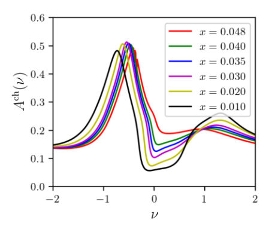
<figcaption class="paper-figure-caption"><b>Fig 1.</b> FIG. 1. Spectral functions of chargons with pseudogap for- mation for U = 5.6t for various levels of hole’s concentrations x at T = 0.1t.</figcaption>
</figure>
<figure class="paper-figure-card">
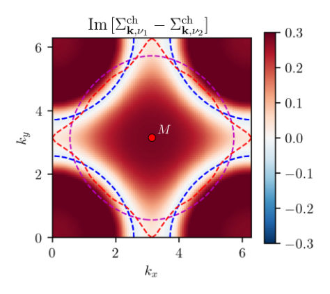
<figcaption class="paper-figure-caption"><b>Fig 2.</b> FIG. 2. Imaginary part of the difference of self-energies of chansons at first and second Matsubara frequencies Σch k,ν1 − Σch k,ν2 as a function of wave vector k for x = 0.04 for T = 0.2t. The blue, red, and purple dotted lines denote the solution of Eq. (21), the local extrema of Ach k (ν = 0), and the noninter- acting Fermi surface, respectively.</figcaption>
</figure>
<figure class="paper-figure-card">
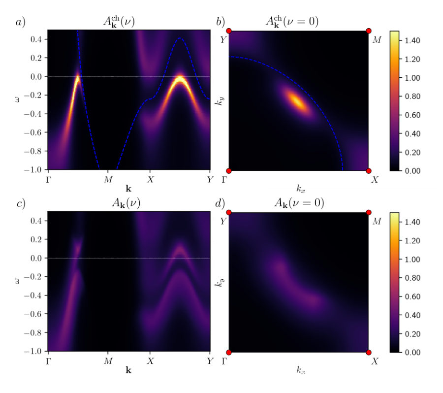
<figcaption class="paper-figure-caption"><b>Fig 3.</b> FIG. 3. Spectral density of chargons (a,b) Ach(k, ω) and physical electrons (c,d) A(k, ω) and for U = 5.6t and x = 0.040 at T = 0.2t. The blue dotted line corresponds to the solution of Eq. (21).</figcaption>
</figure>
<figure class="paper-figure-card">
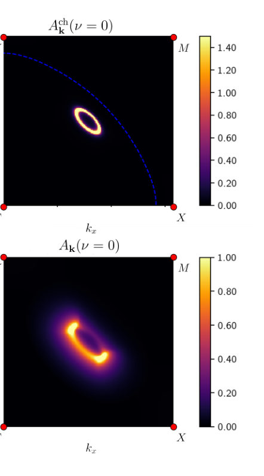
<figcaption class="paper-figure-caption"><b>Fig 4.</b> FIG. 4. The same as Fig. 3 for T = 0.1t.</figcaption>
</figure>
<figure class="paper-figure-card">
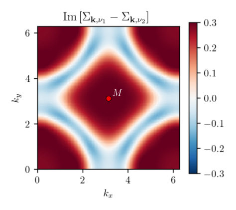
<figcaption class="paper-figure-caption"><b>Fig 5.</b> FIG. 5. Imaginary part of self-energies differences of electrons Σk,ν1 −Σk,ν2 as a function of wave vector k for x = 0.04 for T = 0.2t.</figcaption>
</figure>
</div>

<p><strong>Summary.</strong> This theoretical work models high-Tc superconductors using an SU(2) gauge theory applied to the Hubbard model, separating electrons into chargon and spinon components. By combining DMFT with spinon fluctuations, the authors show that magnetic correlations are essential for explaining the characteristic pseudogap physics, specifically the formation of asymmetric Fermi arcs in the underdoped state.</p>
<p><strong>Why it may be interesting.</strong> The detailed treatment of gauge symmetry and the explicit inclusion of spinon dynamics provide a sophisticated theoretical mechanism for understanding spectral features (like Fermi arcs) that are hallmarks of strongly correlated quantum materials.</p>
<details>
<summary>Detailed structure</summary>
<p><strong>Main problem.</strong> The paper addresses the pseudogap phenomenon in high-temperature superconducting cuprates, aiming to explain the spectral reconstruction and the formation of Fermi arcs.</p>
<p><strong>Main result.</strong> The inclusion of long-wavelength magnetic fluctuations beyond standard DMFT is crucial, as it generates an asymmetry in the damping that successfully describes the formation of Fermi arcs in the underdoped regime.</p>
<p><strong>Method.</strong> The authors employ an SU(2) gauge theory framework applied to the Hubbard model, utilizing Dynamic Mean-Field Theory (DMFT) for the chargon subsystem supplemented by spinon fluctuations.</p>
<p><strong>Model / system.</strong> The system is the two-dimensional Hubbard model describing high-Tc superconductors, which is theoretically mapped onto a fractionalized description involving chargons and spinons within an SU(2) gauge theory.</p>
<p><strong>Key observables.</strong> Spectral weight, damping asymmetry, Fermi arcs (observed in ARPES), and small, closed Fermi surface pockets (from quantum oscillation measurements).</p>
<p><strong>Important parameters / regimes.</strong> Low hole doping regime, temperature ($T=0.1t, 0.2t$), and the coupling strength $U$ relative to the hopping $t$.</p>
<p><strong>Assumptions / limitations.</strong> The approach assumes the physical state can be mapped onto chargons with long-ranged magnetic order and small fluctuations of the gauge field $R_x$.</p>
<p><strong>Figures summary.</strong> Figures illustrate chargon spectral functions and pseudogap formation as doping changes, showing the transition from a hole pocket to an arc-like structure due to correlation effects.</p>
<p><strong>Paper structure.</strong> The paper progresses from establishing the theoretical framework (SU(2) gauge theory/Hubbard model) to applying DMFT supplemented by spinon fluctuations, culminating in the demonstration that these correlations are necessary to explain the observed asymmetric spectral weight transfer leading to Fermi arcs.</p>
</details>
<details>
<summary>Abstract</summary>
<p>We consider the spectral properties of the two-dimensional Hubbard model, describing the electronic properties of high-$T_c$ compounds, within the SU(2) gauge theory, which assumes the separation of electronic degrees of freedom into those of spinon and chargon subsystems. We use the dynamic mean-field theory (DMFT) approach to describe magnetic long-range order in the chargon subsystem while also treating spinon fluctuations on top of this state. We show that DMFT supplemented by long-wavelength magnetic fluctuations is essential for describing the asymmetry in the damping between the inner and outer regions of the hole pockets and the resulting formation of Fermi arcs in the underdoped regime, especially at low hole doping. The underlying hole pockets in the chargon subsystem can be associated with those observed in quantum oscillation measurements.</p>
</details>
<p><sub><a href="#top">↑ back to top</a></sub></p>

<p><a id="paper-2606.03582"></a></p>
<h3 id="fracton-topological-holography"><a href="http://arxiv.org/abs/2606.03582v1">Fracton Topological Holography</a></h3>
<p><strong>Authors:</strong> Yu-Tao Hu, Jie-Yu Zhang, Peng Ye<br>
<strong>Type:</strong> theory · <strong>Category:</strong> strongly correlated electrons · <strong>PDF:</strong> <a href="https://arxiv.org/pdf/2606.03582v1">https://arxiv.org/pdf/2606.03582v1</a><br>
<strong>Analysis basis:</strong> full PDF text, analyzed in chunks
<strong>Topic relevance:</strong> <code>analog quantum simulation</code> <strong>2/5</strong> · <code>entanglement &amp; information structure</code> <strong>1/5</strong></p>
<div class="figure-strip-hint">↔ Scroll figures horizontally</div>
<div class="paper-figures-scroll">
<figure class="paper-figure-card">
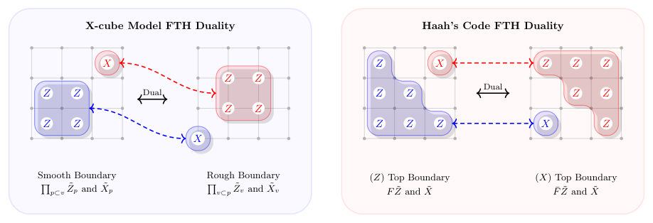
<figcaption class="paper-figure-caption"><b>Fig 1.</b> Fig. 1: Overview of the Fracton Topological Holography (FTH) framework. (a) The topological holography sandwich structure. A d-dimensional fracton bulk is terminated by a gapped top boundary and a dynamical bottom boundary. Transport operators T connect the two boundaries. Changing the top boundary condition (e.g., between</figcaption>
</figure>
<figure class="paper-figure-card">
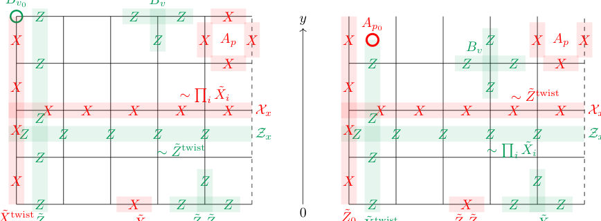
<figcaption class="paper-figure-caption"><b>Fig 2.</b> Fig. 2: Microscopic lattice realization of the 1d Transverse Field Ising Model (TFIM) via 2d toric code topological holography (TH) on a cylinder (x-direction periodic, y-direction open and finite). (a) Under the smooth top boundary: the stabilizer generators are complete four-leg Bv terms, four-edge plaquette Ap terms, three-leg top Bv terms except Bv0. The absence of Bv0 allows to add an e defect on the top boundary. Adding an e on the top boundary realizes a twist in the identified 1d TFIM. The effective physical degrees of freedom on the dynamical bottom boundary are identified on the edges: single edge X acts as ˜Xi, and three-leg Bv acts as the Ising term ˜Zi ˜Zi+1. The uncontractible...</figcaption>
</figure>
<figure class="paper-figure-card">
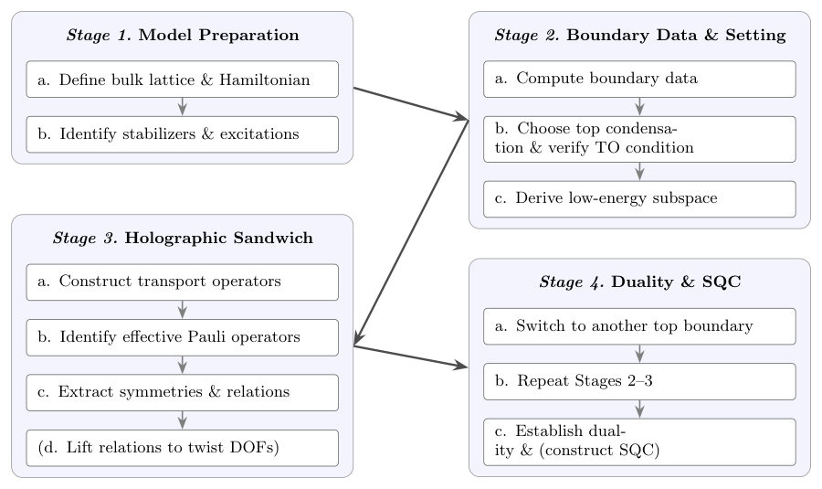
<figcaption class="paper-figure-caption"><b>Fig 3.</b> Fig. 3: Systematic procedure for constructing a (fracton) topological holography. The workflow proceeds as following: after preparing the bulk model (Stage 1), one computes the boundary data and chooses a top boundary that satisfies TO condition (Stage 2), constructs transport operators, identifies the effective Pauli operators, symmetries, relations, lifts relations to twist DOFs (Stage 3), then repeats with another legal top boundary to establish a holographic duality and constructs the switching SQC (Stage 4). Words in parentheses stand for optional operations. A zigzag procedure is when lifting relations to twist DOFs is available: after lifting relations to twist DOFs, the low-energy...</figcaption>
</figure>
<figure class="paper-figure-card">
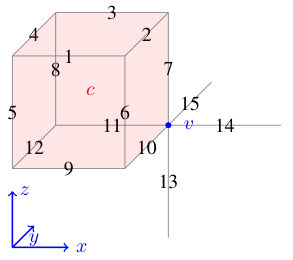
<figcaption class="paper-figure-caption"><b>Fig 4.</b> Fig. 4: Illustration of A terms and B terms in the X-cube model. The A term associated with cube c is Ac = X1X2 · · · X12. The three different B terms attached to vertex v are Bv,xy = Z10Z11Z15Z14, Bv,xz = Z7Z11Z13Z14, and Bv,yz = Z7Z10Z13Z15.</figcaption>
</figure>
<figure class="paper-figure-card">
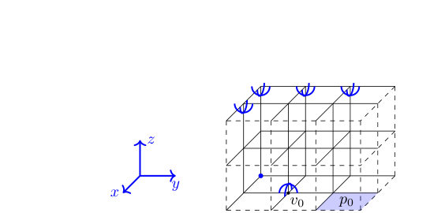
<figcaption class="paper-figure-caption"><b>Fig 5.</b> Fig. 6: Illustration of the lattice and stabilizer setting of X-cube FTH under the planeon condensed top boundary. All the complete bulk stabilizers are in the stabilizer set. On the bottom boundary, the truncated Ac terms (e.g. Q</figcaption>
</figure>
</div>

<p><strong>Summary.</strong> This paper introduces Fracton Topological Holography (FTH), an extension of Topological Holography, to study quantum systems with fracton excitations. It establishes a rigorous four-stage framework to analyze how boundary conditions induce dualities in both type-I and type-II fracton models. This offers a systematic route to understanding duality in complex topological phases of matter.</p>
<p><strong>Why it may be interesting.</strong> The systematic development of FTH provides a powerful, general mathematical tool to analyze duality in complex, geometrically constrained quantum phases, which is highly relevant for understanding exotic correlated states.</p>
<details>
<summary>Detailed structure</summary>
<p><strong>Main problem.</strong> To extend the concept of Topological Holography (TH) to systems exhibiting fracton topological orders, leading to Fracton Topological Holography (FTH).</p>
<p><strong>Main result.</strong> FTH provides a concrete framework for organizing and understanding duality, successfully extending TH to both type-I (X-cube) and type-II (Haah's cubic code) fracton orders.</p>
<p><strong>Method.</strong> The authors developed a systematic four-stage framework involving preparing the bulk model, determining boundary data, identifying low-energy preserving operator algebras, and switching between top boundaries to induce duality.</p>
<p><strong>Model / system.</strong> The study uses abstract topological models like the X-cube model (type-I) and Haah's cubic code (type-II) as examples of fracton phases, analyzed using stabilizer formalisms.</p>
<p><strong>Key observables.</strong> The low-energy effective Hamiltonian ($    ilde{H}$) on the bottom boundary, and the resulting duality mapping between different top boundary conditions.</p>
<p><strong>Important parameters / regimes.</strong> The type of fracton order (I or II), and the boundary conditions (smooth vs. rough for X-cube; Z vs. X for Haah's code).</p>
<p><strong>Assumptions / limitations.</strong> The framework assumes the existence of a systematic four-stage procedure for constructing the holographic sandwich, and that the low-energy dynamics can be captured by boundary operators.</p>
<p><strong>Figures summary.</strong> Figure 1 illustrates the FTH framework, showing the holographic sandwich structure and specific operator interchanges/dualities for the X-cube and Haah's code.</p>
<p><strong>Paper structure.</strong> The paper is structured around the general four-stage FTH framework, applying it first to the X-cube model to demonstrate a plaquette Ising Kramers-Wannier self-duality, and then to Haah's code to test its applicability to type-II fracton orders.</p>
</details>
<details>
<summary>Abstract</summary>
<p>Topological holography (TH), or SymTFT, realizes symmetries and dualities of a quantum system as boundary data of a topological bulk in one higher dimension. We formulate fracton topological holography (FTH), extending this mechanism from liquid topological orders to fracton stabilizer codes. The construction is organized as a general four-stage framework: prepare the bulk model and compute its excitations, determine boundary data and admissible gapped top boundaries, identify the low-energy preserving operator algebra together with its symmetry, relation, and twist data, and then switch among top boundaries to compare the induced boundary descriptions. As a type-I example, we develop FTH for the X-cube model with smooth and rough top boundaries; for a minimal effective Hamiltonian, both yield transverse-field plaquette Ising models, with exchanged subsystem symmetry and twist data, and the boundary switch is implemented by a linear-depth local unitary sequential quantum circuit (SQC). As a type-II example, we formulate FTH for Haah's cubic code in the Laurent-polynomial stabilizer formalism and analyze the natural $(Z)$ and $(X)$ top boundaries, which induce two two-dimensional qubit systems related locally by exchanging generalized plaquette Ising and transverse-field terms and nonlocally by a symmetry--relation duality. These results show that FTH is a genuine extension of TH to both type-I and type-II fracton orders. FTH therefore provides a concrete framework for organizing and understanding duality, with the prospect of offering a systematic route to new dualities.</p>
</details>
<p><sub><a href="#top">↑ back to top</a></sub></p>

<p><a id="paper-2606.03473"></a></p>
<h3 id="hierarchical-crack-patterns-identification-of-crack-generations"><a href="http://arxiv.org/abs/2606.03473v1">Hierarchical crack patterns: Identification of crack generations</a></h3>
<p><strong>Authors:</strong> Yuri Yu. Tarasevich, Andrei S. Burmistrov, Andrei V. Eserkepov<br>
<strong>Type:</strong> theory · <strong>Category:</strong> disordered systems and neural networks · <strong>PDF:</strong> <a href="https://arxiv.org/pdf/2606.03473v1">https://arxiv.org/pdf/2606.03473v1</a><br>
<strong>Analysis basis:</strong> full PDF text, analyzed in chunks
<strong>Topic relevance:</strong> <code>methods for driven-dissipative</code> <strong>2/5</strong> · <code>analog quantum simulation</code> <strong>1/5</strong></p>
<div class="figure-strip-hint">↔ Scroll figures horizontally</div>
<div class="paper-figures-scroll">
<figure class="paper-figure-card">
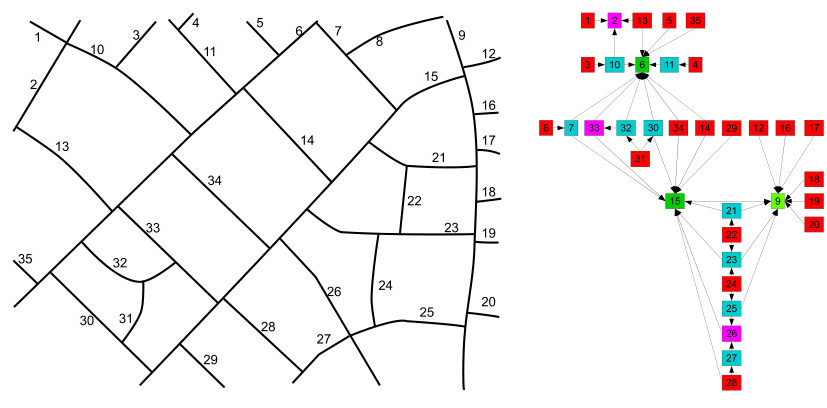
<figcaption class="paper-figure-caption"><b>Fig 1.</b> Figure 1. Graph corresponding to the hierarchical crack pattern presented in [10, Fig. 4a] along with the corresponding DAG.</figcaption>
</figure>
<figure class="paper-figure-card">
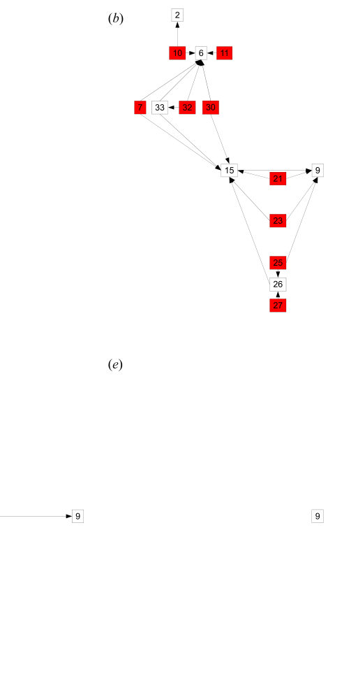
<figcaption class="paper-figure-caption"><b>Fig 2.</b> Figure 2. Stages of DAG processing.</figcaption>
</figure>
<figure class="paper-figure-card">

<figcaption class="paper-figure-caption"><b>Fig 3.</b> Figure 3. Stages of DAG processing in algorithm [3].</figcaption>
</figure>
<figure class="paper-figure-card">
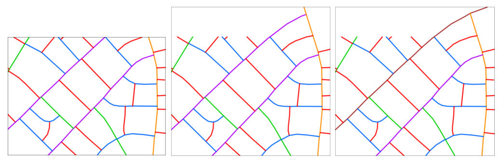
<figcaption class="paper-figure-caption"><b>Fig 4.</b> Figure 4. An example of the change in crack generations determined using DAG for two possible situations when shifting the image boundary. The different shades correspond to distances measured in generations from the leaves.</figcaption>
</figure>
<figure class="paper-figure-card">
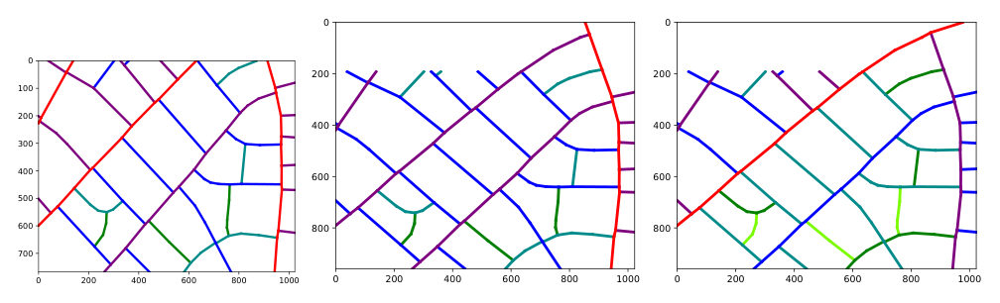
<figcaption class="paper-figure-caption"><b>Fig 5.</b> Figure 5. An example of the change in crack generations determined using algorithm [3] for two possible situations when shifting the image boundary. Different shades correspond to different generations.</figcaption>
</figure>
</div>

<p><strong>Summary.</strong> This paper proposes a robust graph-theoretic method to classify the generation sequence of cracks in hierarchical crack patterns. It models the pattern as a DAG and uses a leaf-removal algorithm, which successfully reduces the classification problem to topological sorting. The resulting method is shown to be highly stable against minor changes in the analyzed image boundaries.</p>
<p><strong>Why it may be interesting.</strong> While the topic is materials science/image analysis, the methodology—reducing a complex structural classification problem to a graph-theoretic sorting problem—shares conceptual parallels with analyzing connectivity or structure in complex quantum systems.</p>
<details>
<summary>Detailed structure</summary>
<p><strong>Main problem.</strong> The paper addresses the problem of classifying the generation order of cracks within a Hierarchical Crack Pattern (HCP) image fragment.</p>
<p><strong>Main result.</strong> The proposed method successfully reduces the classification to topological sorting, yielding a robust generation assignment that is stable even when the image boundaries shift.</p>
<p><strong>Method.</strong> The core method involves defining cracks as chains of edges near 180 degrees and constructing a Directed Acyclic Graph (DAG) where arcs point from child to parent at T-junctions. Generation is then determined by iteratively removing leaves (vertices with zero in-degree) until all vertices are processed.</p>
<p><strong>Model / system.</strong> The physical system is the Hierarchical Crack Pattern (HCP) found in various materials, which is digitized and modeled as a graph structure. The analysis assumes the graph is connected, has vertex degrees $\le 3$, and contains no loops.</p>
<p><strong>Key observables.</strong> Crack generations, represented by the topological ordering of the DAG vertices.</p>
<p><strong>Important parameters / regimes.</strong> The acceptable angular deviation for defining a crack ($\le 30^\circ$).</p>
<p><strong>Assumptions / limitations.</strong> The network must be strictly hierarchical, allowing for a clear child-parent relationship, and the graph must satisfy degree $\le 3$ and no loops.</p>
<p><strong>Figures summary.</strong> Figures illustrate the construction of the graph and DAG, showing the step-by-step processing of the DAG using the proposed leaf-removal algorithm, and comparing results against older methods under boundary shifts.</p>
<p><strong>Paper structure.</strong> The paper first introduces the problem and the concept of crack definition. It then details the DAG construction and the leaf-removal algorithm for topological sorting. Finally, it presents results demonstrating the method's robustness compared to existing techniques.</p>
</details>
<details>
<summary>Abstract</summary>
<p>Hierarchical crack patterns of various origins are ubiquitous in the world around us. We reduce the problem of classifying crack generations in an image of a part of the entire hierarchical crack pattern to the well-known topological sorting of a directed acyclic graph. The classification demonstrates robustness to reasonable shifts in the pattern image boundaries.</p>
</details>
<p><sub><a href="#top">↑ back to top</a></sub></p>

<p><a id="paper-2606.02986"></a></p>
<h3 id="machine-learning-prediction-of-quantum-fisher-information-from-collective-spin-and-spectral-features"><a href="http://arxiv.org/abs/2606.02986v1">Machine-Learning Prediction of Quantum Fisher Information from Collective Spin and Spectral Features</a></h3>
<p><strong>Authors:</strong> Yusef Maleki, Luis D. Zambrano Palma<br>
<strong>Type:</strong> theory · <strong>Category:</strong> quantum information and computing · <strong>PDF:</strong> <a href="https://arxiv.org/pdf/2606.02986v1">https://arxiv.org/pdf/2606.02986v1</a><br>
<strong>Analysis basis:</strong> full PDF text, analyzed in chunks
<strong>Topic relevance:</strong> <code>entanglement &amp; information structure</code> <strong>2/5</strong> · <code>analog quantum simulation</code> <strong>1/5</strong></p>
<div class="figure-strip-hint">↔ Scroll figures horizontally</div>
<div class="paper-figures-scroll">
<figure class="paper-figure-card">
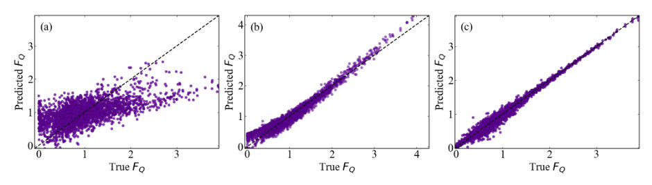
<figcaption class="paper-figure-caption"><b>Fig 1.</b> FIG. 1. Comparison between exact and SVR-predicted quantum Fisher information using (a) linear, (b) polynomial (d = 2), and (c) RBF kernels. The dashed line denotes the ideal agreement between the exact and predicted QFI values.</figcaption>
</figure>
<figure class="paper-figure-card">
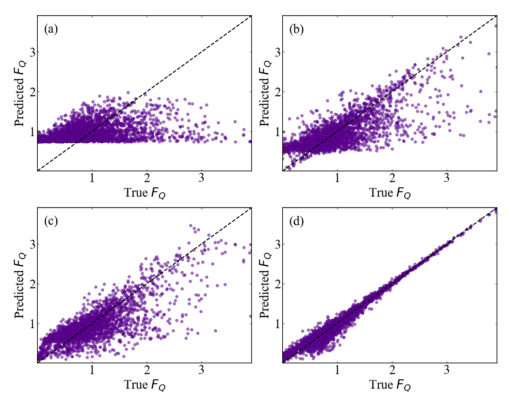
<figcaption class="paper-figure-caption"><b>Fig 2.</b> FIG. 2. Prediction of the quantum Fisher information using differ- ent sets of collective observables within the RBF-SVR model. (a) First moments only, (b) second moments only, (c) symmetrized cor- relators only, and (d) second moments combined with symmetrized correlators. The dashed line denotes the ideal agreement between the exact and predicted QFI values.</figcaption>
</figure>
<figure class="paper-figure-card">
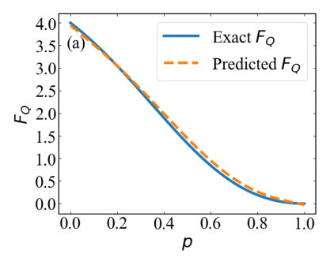
<figcaption class="paper-figure-caption"><b>Fig 3.</b> FIG. 3. Comparison between the exact and SVR-predicted quan- tum Fisher information for external depolarized two-qubit Bell-state family as a function of the depolarizing parameter p. The solid and dashed curves represent the exact and SVR-predicted QFI values, re- spectively.</figcaption>
</figure>
<figure class="paper-figure-card">
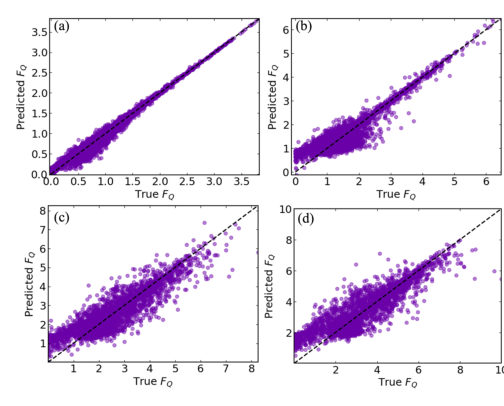
<figcaption class="paper-figure-caption"><b>Fig 4.</b> FIG. 4. Comparison between exact and SVR-predicted quantum Fisher information for multipartite systems composed of (a) two qubits, (b) three qubits, (c) four qubits, and (d) five qubits using collective spin moment features. The dashed line denotes the ideal agreement between the exact and predicted QFI values.</figcaption>
</figure>
<figure class="paper-figure-card">

<figcaption class="paper-figure-caption"><b>Fig 5.</b> Figure 4 shows the dispersion plots between the predicted and exact QFI values for the two-, three-, four-, and five-qubit cases. A clear progressive degradation in the prediction ac- curacy is observed as the number of qubits increases, indicat- ing that the selected 15 features set [Eq. (14)] become pro- gressively less informative as the dimension of the Hilbert space grows. Specifically, in Fig. 4(a), corresponding to the two-qubit case, the predicted values remain strongly local- ized around the diagonal prediction line, while the three-qubit system shown in Fig. 4(b), noticeable deviations from the ideal prediction line begin to emerge. This tendency becomes more pronounced in the...</figcaption>
</figure>
</div>

<p><strong>Summary.</strong> This paper demonstrates that the Quantum Fisher Information (QFI), a key metric in quantum metrology, can be accurately predicted using machine learning (SVR) trained on low-order collective spin and spectral moments. The results show that while simple spin moments are insufficient, combining these with spectral quantities like purity significantly enhances predictive power, offering a pathway to estimate quantum sensitivity without full quantum state tomography.</p>
<p><strong>Why it may be interesting.</strong> This work provides a powerful, data-driven methodology for characterizing metrological resources in complex quantum systems, suggesting practical ways to estimate quantum limits using limited experimental measurements.</p>
<details>
<summary>Detailed structure</summary>
<p><strong>Main problem.</strong> The core problem is predicting the Quantum Fisher Information (QFI) for multipartite quantum systems without performing computationally intensive full quantum-state tomography.</p>
<p><strong>Main result.</strong> QFI can be accurately predicted using machine learning models trained on a reduced set of physically accessible quantities, specifically the interplay between collective covariance and low-order spectral moments.</p>
<p><strong>Method.</strong> Support Vector Regression (SVR) with an RBF kernel is employed to learn the nonlinear mapping between a set of low-order collective spin and spectral observables and the target QFI.</p>
<p><strong>Model / system.</strong> The study focuses on multipartite quantum systems, ranging from two to five qubits, analyzed using random pure, mixed, and hybrid quantum states.</p>
<p><strong>Key observables.</strong> Quantum Fisher Information (QFI), collective spin moments ($\langle\hat{J}_i
angle$), second-order moments ($\langle\hat{J}_i^2
angle$), symmetrized correlators ($\langle\hat{J}_i\hat{J}_j + \hat{J}_j\hat{J}_i
angle$), Purity ($  ext{Tr}(
ho^2)$), and the third spectral moment ($    ext{Tr}(
ho^3)$).</p>
<p><strong>Important parameters / regimes.</strong> System size (number of qubits, $N=2$ to $5$), and the specific structure of the quantum state (pure, mixed, hybrid).</p>
<p><strong>Assumptions / limitations.</strong> The primary assumption is that the metrological sensitivity (QFI) is governed by a compact, low-dimensional set of experimentally measurable observables, bypassing the need for full state reconstruction.</p>
<p><strong>Figures summary.</strong> Figures compare exact QFI values against SVR predictions using different feature sets (e.g., spin moments only vs. spin moments + purity + $   ext{Tr}(
ho^3)$), showing increasing accuracy with the inclusion of higher-order spectral terms. One figure tracks performance degradation as the number of qubits increases.</p>
<p><strong>Paper structure.</strong> The paper introduces QFI, details the SVR methodology, and then systematically tests the predictive power by comparing feature sets: first only spin moments, then adding purity ($    ext{Tr}(
ho^2)$), and finally adding the cubic spectral moment ($    ext{Tr}(
ho^3)$), analyzing results for both two-qubit and larger multipartite systems.</p>
</details>
<details>
<summary>Abstract</summary>
<p>Quantum Fisher information (QFI) is a fundamental quantifier in quantum metrology, determining the ultimate precision achievable in parameter-estimation protocols through the quantum Cramér-Rao bound. However, direct evaluation of the QFI generally requires detailed knowledge of the density matrix, making it increasingly demanding as the Hilbert-space dimension grows. In this work, we investigate the extent to which the QFI of multipartite quantum systems can be predicted from a limited set of experimentally accessible quantities using support vector regression (SVR). By comparing different physically motivated features, we identify a dominant feature set governing QFI and show that the predictive power of collective spin moments alone decreases as system size and consequently Hilbert-space dimension grows. We demonstrate that QFI is governed primarily by the interplay between collective covariance and low-order spectral moments of the density matrix. Our results identify the physically relevant information sectors governing the QFI and demonstrate that accurate estimation of metrological sensitivity can be achieved from a restricted set of experimentally accessible quantities without requiring full quantum-state tomography.</p>
</details>
<p><sub><a href="#top">↑ back to top</a></sub></p>

<p><a id="paper-2606.03859"></a></p>
<h3 id="subspace-selective-unitary-manipulation-based-on-the-hilbert-space-symmetric-structures-in-the-multiple-quantum-operator-algebra-spaces-in-the-quantum-computing-speedup-theory"><a href="http://arxiv.org/abs/2606.03859v1">Subspace-selective unitary manipulation based on the Hilbert-space symmetric structures in the multiple-quantum operator algebra spaces in the quantum-computing speedup theory</a></h3>
<p><strong>Authors:</strong> Xijia Miao<br>
<strong>Type:</strong> theory · <strong>Category:</strong> quantum information and computing · <strong>PDF:</strong> <a href="https://arxiv.org/pdf/2606.03859v1">https://arxiv.org/pdf/2606.03859v1</a><br>
<strong>Analysis basis:</strong> full PDF text, analyzed in chunks
<strong>Topic relevance:</strong> <code>entanglement &amp; information structure</code> <strong>2/5</strong> · <code>analog quantum simulation</code> <strong>1/5</strong></p>
<div class="figure-strip-hint">↔ Scroll figures horizontally</div>
<div class="paper-figures-scroll">
<figure class="paper-figure-card">
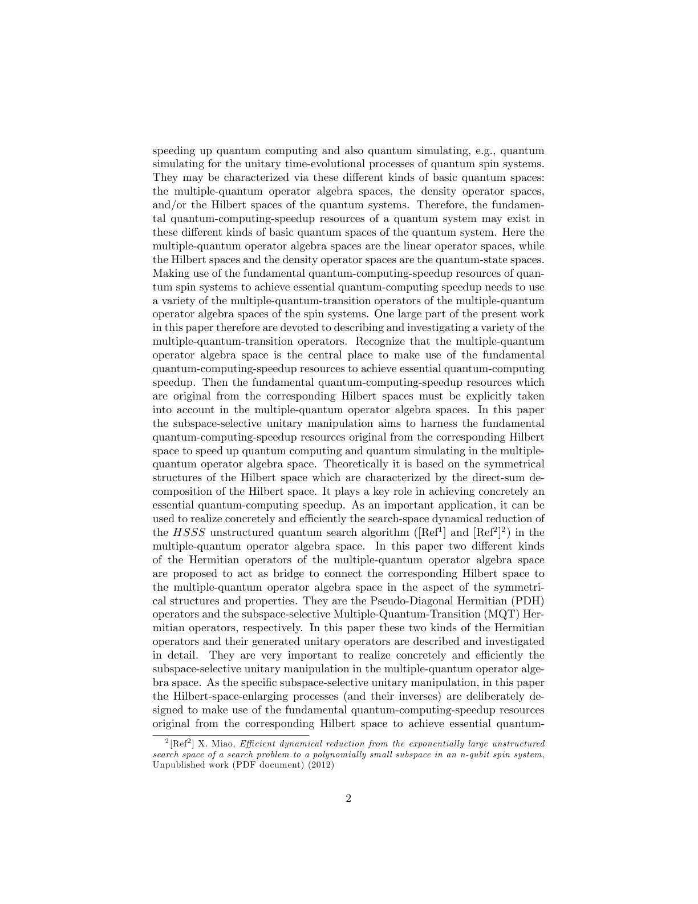
<figcaption class="paper-figure-caption"><b>Fig 1.</b> Low-resolution page preview, page 2</figcaption>
</figure>
<figure class="paper-figure-card">
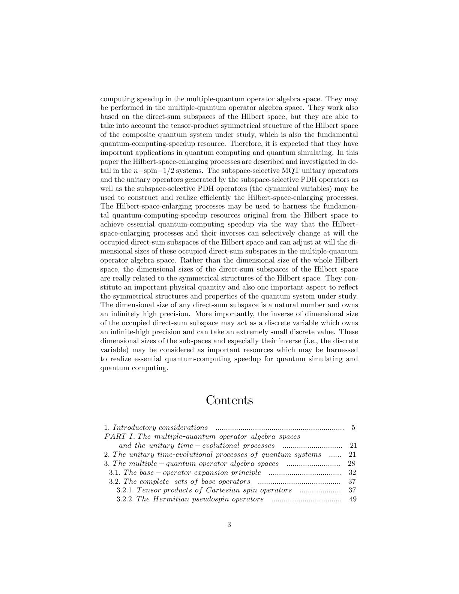
<figcaption class="paper-figure-caption"><b>Fig 2.</b> Low-resolution page preview, page 3</figcaption>
</figure>
<figure class="paper-figure-card">
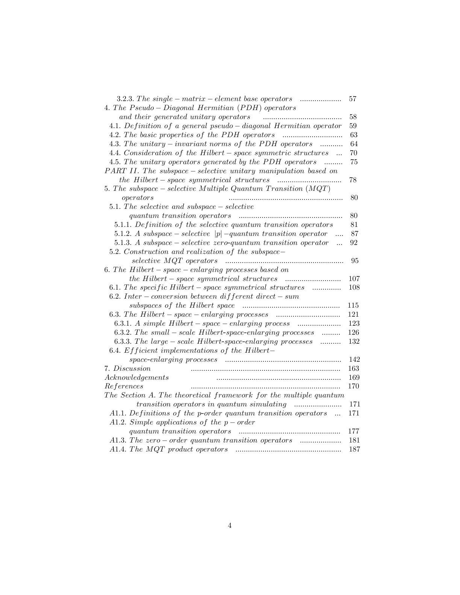
<figcaption class="paper-figure-caption"><b>Fig 3.</b> Low-resolution page preview, page 4</figcaption>
</figure>
<figure class="paper-figure-card">
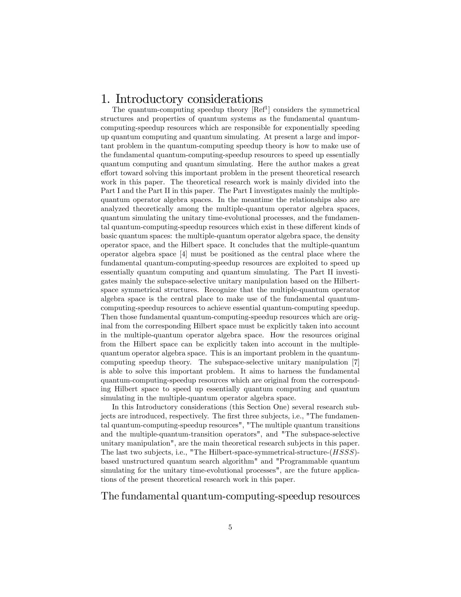
<figcaption class="paper-figure-caption"><b>Fig 4.</b> Low-resolution page preview, page 5</figcaption>
</figure>
<figure class="paper-figure-card">
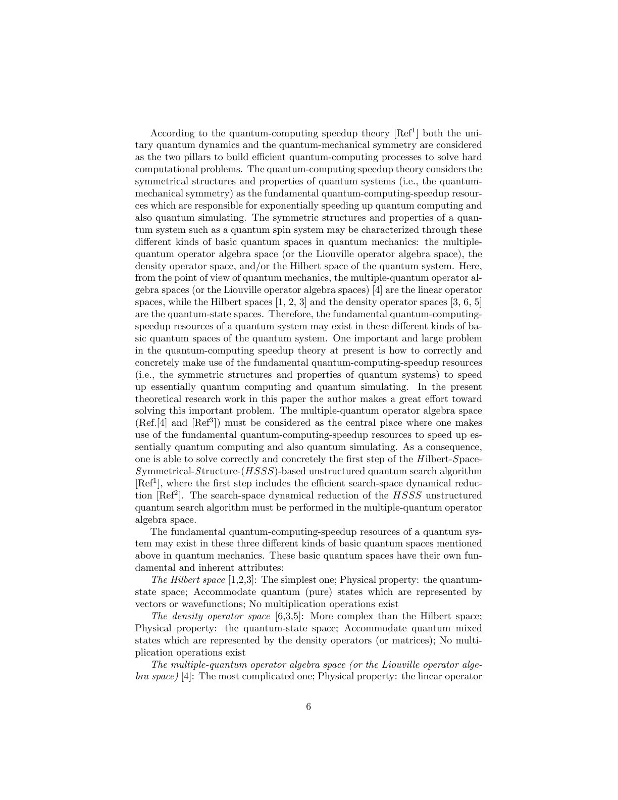
<figcaption class="paper-figure-caption"><b>Fig 5.</b> Low-resolution page preview, page 6</figcaption>
</figure>
</div>

<p><strong>Summary.</strong> This paper develops a theoretical framework arguing that the multiple-quantum operator algebra space is the fundamental resource hub for quantum speedup. It proposes using subspace-selective unitary manipulation, implemented via specialized MQT operators, to explicitly incorporate quantum-state resources from the Hilbert space into this operator algebra space for enhanced quantum simulation and computation.</p>
<p><strong>Why it may be interesting.</strong> This work provides a highly abstract, operator-algebraic framework for understanding quantum speedup, connecting concepts from quantum simulation (Hamiltonian decomposition) directly to the structure of quantum information processing.</p>
<details>
<summary>Detailed structure</summary>
<p><strong>Main problem.</strong> The central problem is developing a method to effectively utilize fundamental quantum-computing-speedup resources, which are inherent in the symmetric structures of quantum systems, to accelerate quantum computation and simulation.</p>
<p><strong>Main result.</strong> The authors propose that the multiple-quantum operator algebra space is the central hub for these resources, and subspace-selective unitary manipulation, using specialized MQT operators, is the key mechanism to bridge resources from the standard Hilbert space into this operator algebra space.</p>
<p><strong>Method.</strong> The research employs theoretical analysis involving the construction and manipulation of multiple-quantum transition (MQT) operators and pseudo-diagonal Hermitian (PDH) operators to realize subspace-selective unitary transformations.</p>
<p><strong>Model / system.</strong> The theory is developed for quantum spin systems (e.g., n spin-1/2 systems), analyzing the relationship between the Hilbert space (state space), the density operator space, and the multiple-quantum operator algebra space (operator space).</p>
<p><strong>Key observables.</strong> The dimensional sizes of occupied direct-sum subspaces, and the action of the total spin operator on MQT product operators.</p>
<p><strong>Important parameters / regimes.</strong> The quantum-transition order 'p' and the coefficients defining the component Hamiltonians ($H_0, H_1, H_{02}$).</p>
<p><strong>Assumptions / limitations.</strong> The theory assumes that the multiple-quantum operator algebra space is the correct framework for exploiting speedup resources, and that specific operator constructions (PDH, MQT) can bridge the gap between state and operator representations.</p>
<p><strong>Figures summary.</strong> Not specified.</p>
<p><strong>Paper structure.</strong> The paper is structured in parts: Part I investigates the multiple-quantum operator algebra spaces and their relationship to quantum simulation; Part II focuses on subspace-selective unitary manipulation, detailing the use of MQT operators and Hilbert-space-enlarging processes.</p>
</details>
<details>
<summary>Abstract</summary>
<p>The quantum-computing speedup theory considers the symmetric structures and properties of quantum systems as the fundamental Quantum-Computing-Speedup (QCS) resources which are responsible for exponentially speeding up quantum computing and simulating. At present a large and important problem is how to make use of the fundamental QCS resources to speed up essentially quantum computing and simulating. Here the author makes a great effort toward solving this important problem. The theoretical research work in this paper is mainly divided into the two Parts I and II. The Part I investigates mainly the multiple-quantum operator algebra spaces. And the relationships are analyzed among the multiple-quantum operator algebra spaces, quantum simulating for the unitary time-evolutional processes, and the fundamental QCS resources which exist in the different kinds of basic quantum spaces: the multiple-quantum operator algebra space, the density operator space, and the Hilbert space. It concludes that the multiple-quantum operator algebra space must be positioned as the central place where the QCS resources are exploited to speed up quantum computing and simulating. The Part II investigates mainly the subspace-selective unitary manipulation based on the Hilbert-space symmetric structures. Recognize that the multiple-quantum operator algebra space is the central place. Then those QCS resources original from the Hilbert space (a quantum-state space) must be explicitly taken into account in the multiple-quantum operator algebra space (a linear operator space). This is an important problem. The subspace-selective unitary manipulation is able to solve this problem. It aims to harness the fundamental QCS resources original from the Hilbert space to speed up quantum computing and simulating in the multiple-quantum operator algebra space.</p>
</details>
<p><sub><a href="#top">↑ back to top</a></sub></p>

<p><a id="paper-2606.03671"></a></p>
<h3 id="quantum-matter-makes-lightcones-quantum"><a href="http://arxiv.org/abs/2606.03671v1">Quantum Matter Makes Lightcones Quantum</a></h3>
<p><strong>Authors:</strong> Tomohiro Fujita, Misao Sasaki<br>
<strong>Type:</strong> theory · <strong>Category:</strong> other · <strong>PDF:</strong> <a href="https://arxiv.org/pdf/2606.03671v1">https://arxiv.org/pdf/2606.03671v1</a><br>
<strong>Analysis basis:</strong> full PDF text, analyzed in chunks
<strong>Topic relevance:</strong> <code>Keldysh / 2PI / non-Gaussian methods</code> <strong>2/5</strong></p>
<div class="figure-strip-hint">↔ Scroll figures horizontally</div>
<div class="paper-figures-scroll">
<figure class="paper-figure-card">

<figcaption class="paper-figure-caption"><b>Fig 1.</b> Figure 1. Schematic configuration of the unperturbed light cone (black cone) and the source- particle trajectory (blue line). We study how null rays (orange lines) passing near the quantum- mechanical source (blue dot) are affected by its weak Newtonian gravitational potential. The impact parameter b is the closest spatial separation between an unperturbed ray and the source trajectory. The Shapiro time delay is not yet reflected in this picture.</figcaption>
</figure>
<figure class="paper-figure-card">

<figcaption class="paper-figure-caption"><b>Fig 2.</b> Figure 2. Schematic picture of the quantum Shapiro delay ˆτn defined in Eq. (3.4). The blue dot represents the quantum source particle at x = ˆqI(t). The weak Newtonian potential sourced by this particle shifts the original Minkowski light cone (gray diagonal line). The orange solid line shows the mean delayed light cone, shifted by ¯τn = ⟨ˆτn⟩, while the fluctuation δˆτn = ˆτn −¯τn makes its position quantum-mechanically uncertain, as indicated by the purple dashed lines. This is a 2D projection of the 3+1-dimensional geometry; the ray passes near the source without intersecting it (see Fig. 1).</figcaption>
</figure>
<figure class="paper-figure-card">

<figcaption class="paper-figure-caption"><b>Fig 3.</b> Figure 3. Two null rays emitted from the spatial origin x = 0 at times Ta and Tb in the directions na and nb, respectively. Their quantum Shapiro-delay fluctuations, δˆτa and δˆτb, depend on the position fluctuations of the same source particle evaluated at different times, δ ˆqI(sa) and δ ˆqI(sb), where sa and sb denote the respective closest-approach times. Since source-position operators at different times do not commute in general, the two causal-boundary shifts also do not commute with each other in general, [δˆτa, δˆτb] ̸= 0.</figcaption>
</figure>
<figure class="paper-figure-card">

<figcaption class="paper-figure-caption"><b>Fig 4.</b> Figure 4. Schematic picture of the superposition of causal relations induced by a single delocalized particle, namely, a single source particle in a spatial superposition. For simplicity, the source wave packets are assumed to be sharply localized in the two branches, and their intrinsic widths are neglected. In the |N⟩branch (left blue dot and upper orange line) the source is closer to the ray and produces a larger Shapiro delay than in the |F⟩branch (right blue dot and lower dark orange line). The resulting branch-dependent causal boundaries (two orange lines) divide spacetime into three regions. In the intermediate region, the causal relation with the origin is timelike in one branch and...</figcaption>
</figure>
</div>

<p><strong>Summary.</strong> This theoretical paper explores the quantum nature of spacetime causality by examining a scalar field propagating near a quantum source. It demonstrates that the source's quantum fluctuations induce an operator-valued shift in the light cones, making the causal structure inherently uncertain. This effect is calculated perturbatively and shows that quantum matter fundamentally alters the geometry of spacetime correlations.</p>
<p><strong>Why it may be interesting.</strong> While focused on gravity, the core mechanism—quantifying how quantum uncertainty in a source modifies fundamental geometric/causal structures—is highly relevant to open quantum systems where environmental coupling dictates observable dynamics.</p>
<details>
<summary>Detailed structure</summary>
<p><strong>Main problem.</strong> The paper investigates how the causal structure of spacetime, defined by light cones, becomes quantum when the matter source generating the gravitational field is itself quantum mechanical.</p>
<p><strong>Main result.</strong> Quantum matter makes the causal structure itself quantum, leading to non-commuting causal-boundary shifts and smearing the light-cone singularity, even without quantizing gravity.</p>
<p><strong>Method.</strong> The analysis uses perturbative field-theoretic calculations in the weak-field limit, focusing on the operator-valued Shapiro time delay ($\hat{	au}_n$) for a massless scalar field.</p>
<p><strong>Model / system.</strong> The system models a massless scalar field propagating in a spacetime perturbed by a weak Newtonian gravitational potential sourced by a non-relativistic quantum particle.</p>
<p><strong>Key observables.</strong> Operator-valued Shapiro delay ($\hat{	au}_n$), noncommuting causal-boundary shifts, and the smearing of the Wightman light-cone singularity.</p>
<p><strong>Important parameters / regimes.</strong> Low-energy, non-relativistic limit; the gravitational coupling strength (related to $GM/b$); Planck scales ($\ell_{Pl}, t_{Pl}$).</p>
<p><strong>Assumptions / limitations.</strong> The analysis assumes a weak-field approximation and uses an instantaneous Newtonian potential, avoiding full quantum gravity treatment.</p>
<p><strong>Figures summary.</strong> Figure 1 schematically shows the effect of the weak potential on null rays. Figure 2 illustrates the quantum Shapiro delay ($\hat{	au}_n$) shift. Figure 4 shows the superposition of causal relations when the source is in a spatial superposition.</p>
<p><strong>Paper structure.</strong> The paper develops the problem by first establishing the classical Shapiro delay, then quantizing this delay into an operator ($\hat{	au}_n$). It analyzes the consequences of this operator on the commutator and Wightman function, demonstrating non-commutativity and smearing effects.</p>
</details>
<details>
<summary>Abstract</summary>
<p>In gravitational physics, matter does not merely move within spacetime; it also determines the light cones that define causal relations. What happens when the matter that determines these light cones is itself in a quantum state? We address this question in a controlled low-energy setting: a massless scalar field propagating in the spacetime with the Newtonian gravitational potential sourced by a non-relativistic quantum particle. We show that the light cones are affected by an operator-valued Shapiro delay, with the three consequences: (i) causal-boundary shifts are promoted to noncommuting observables, giving the causal structure an irreducible quantum uncertainty; (ii) the causal relation between two fixed spacetime points can become a superposition of timelike and spacelike configurations; and (iii) tracing out the source smears the Wightman light-cone singularity, producing an effective UV cutoff. Thus, quantum matter does not merely fluctuate within spacetime; it makes the causal structure itself quantum, even without quantized gravitons.</p>
</details>
<p><sub><a href="#top">↑ back to top</a></sub></p>

<p><a id="paper-2606.03249"></a></p>
<h3 id="quantum-classical-equivalence-for-and-functions"><a href="http://arxiv.org/abs/2606.03249v1">Quantum-Classical Equivalence for AND-Functions</a></h3>
<p><strong>Authors:</strong> Sreejata Kishor Bhattacharya, Farzan Byramji, Arkadev Chattopadhyay, Yogesh Dahiya, Shachar Lovett<br>
<strong>Type:</strong> theory · <strong>Category:</strong> quantum information and computing · <strong>PDF:</strong> <a href="https://arxiv.org/pdf/2606.03249v1">https://arxiv.org/pdf/2606.03249v1</a><br>
<strong>Analysis basis:</strong> full PDF text, analyzed in chunks
<strong>Topic relevance:</strong> <code>entanglement &amp; information structure</code> <strong>2/5</strong></p>
<div class="figure-strip-hint">↔ Scroll figures horizontally</div>
<div class="paper-figures-scroll">
<figure class="paper-figure-card">

<figcaption class="paper-figure-caption"><b>Fig 1.</b> Figure 1: A semi-adaptive max-degree restriction tree for And3 ˝ Or2 with core variables V “ tx1, x2, x3u. Leaves correspond to the 2|V | restrictions in the tree. For each leaf restriction, the re- stricted function pAnd3 ˝ Or2q|ρ computes an And over exactly the variables left free.</figcaption>
</figure>
</div>

<p><strong>Summary.</strong> This work resolves a major open problem in quantum communication complexity by proving that for AND-functions, the quantum and classical deterministic communication complexities are polynomially equivalent. The authors achieve this by deeply connecting these complexity measures to the structural property of De Morgan sparsity of the function. This result significantly narrows the gap between quantum and classical computational power for this important class of functions.</p>
<p><strong>Why it may be interesting.</strong> While focused on classical communication complexity, the techniques involving Fourier analysis, restriction/averaging procedures, and structural characterizations of functions are highly relevant to understanding the complexity of quantum algorithms and quantum information processing.</p>
<details>
<summary>Detailed structure</summary>
<p><strong>Main problem.</strong> The paper addresses the open problem of whether quantum protocols can provide an exponential advantage over classical protocols for computing general total Boolean functions.</p>
<p><strong>Main result.</strong> It proves that for the specific class of AND-functions, the bounded-error quantum and classical deterministic communication complexities are polynomially related, up to polylogarithmic factors.</p>
<p><strong>Method.</strong> The proof relies on structural characterizations of Boolean functions, relating communication complexity bounds to the function's De Morgan sparsity and using advanced Fourier analysis techniques on random restrictions.</p>
<p><strong>Model / system.</strong> The model is the two-party communication complexity setting (Alice and Bob) for computing total Boolean functions, specifically focusing on functions composed with the AND-2 gadget ($f \circ 	ext{AND}_2$).</p>
<p><strong>Key observables.</strong> Deterministic communication complexity ($D_{ccp}$), bounded-error quantum communication complexity ($Q_{ccp}$), and the De Morgan sparsity ($  ext{sparf}$) of the outer function $f$.</p>
<p><strong>Important parameters / regimes.</strong> The polynomial relationship holds up to polylogarithmic factors in $n$, and the lower bounds are derived from the sparsity $s$ of the function $f$.</p>
<p><strong>Assumptions / limitations.</strong> The equivalence is proven for AND-functions, not for all total Boolean functions (the general Log-Equivalence Conjecture remains open).</p>
<p><strong>Figures summary.</strong> Figures illustrate the construction of semi-adaptive max-degree restriction trees for specific functions like $    ext{And}^3 \oplus   ext{Or}^2$ and $    ext{Orn}$, demonstrating the structural machinery used in the proof.</p>
<p><strong>Paper structure.</strong> The paper progresses by first establishing the general framework of communication complexity, then developing tools based on sparsity and restriction trees, and finally applying these tools to prove the polynomial equivalence for the AND-function class.</p>
</details>
<details>
<summary>Abstract</summary>
<p>A major open problem in quantum communication complexity is whether quantum protocols can be exponentially more efficient than classical protocols for computing total Boolean functions; the prevailing conjecture is that they cannot be so. In a seminal work, Razborov (2002) resolved this question for AND-functions of the form $$ F(x,y) = f(x_1 \land y_1, \ldots, x_n \land y_n), $$ when the outer function $f$ is symmetric, by proving that their bounded-error quantum and classical communication complexities are polynomially related. Since then, extending this result to all AND-functions has remained open and has been posed by several authors.   In this work, we settle this problem in a strong way. We show that for every Boolean function $f$, the bounded-error quantum and classical deterministic communication complexities of the function $f \circ \mathrm{AND}_2$ are polynomially related, up to polylogarithmic factors in $n$. We prove this by showing that both are characterized--up to polynomial loss--by the logarithm of the De Morgan sparsity of $f$.   Our results build on the recent work of Chattopadhyay, Dahiya, and Lovett (2025) on structural characterizations of non-sparse Boolean functions, which we extend to resolve the conjecture for general AND-functions.</p>
</details>
<p><sub><a href="#top">↑ back to top</a></sub></p>

<p><a id="paper-2606.02785"></a></p>
<h3 id="quiver-quantum-informed-views-for-enhanced-representations-in-large-ml-models"><a href="http://arxiv.org/abs/2606.02785v1">QUIVER: Quantum-Informed Views for Enhanced Representations in Large ML Models</a></h3>
<p><strong>Authors:</strong> Aritra Bal, Michael Binder, Markus Klute, Benedikt Maier, Michael Spannowsky<br>
<strong>Type:</strong> theory · <strong>Category:</strong> other · <strong>PDF:</strong> <a href="https://arxiv.org/pdf/2606.02785v1">https://arxiv.org/pdf/2606.02785v1</a><br>
<strong>Analysis basis:</strong> full PDF text, analyzed in chunks
<strong>Topic relevance:</strong> <code>entanglement &amp; information structure</code> <strong>2/5</strong></p>
<div class="figure-strip-hint">↔ Scroll figures horizontally</div>
<div class="paper-figures-scroll">
<figure class="paper-figure-card">

<figcaption class="paper-figure-caption"><b>Fig 1.</b> Figure 1. Validation MAE during training for the DimeNet++ baseline and the quantum-inspired QDimeNet++ model. Solid lines show the mean across N = 10 paired seeds (identical data splits and initialization RNG state across the two models; only the architecture differs), smoothed with a 3-epoch rolling window. Shaded bands denote ±1 sample standard deviation across seeds (calculated using standard library functions with ddof=1). The lower panel shows the per-epoch paired difference ∆MAE = MAEDimeNet++ −MAEQDimeNet++ with the correspond- ing ±1σ band over the same paired seeds; positive values indicate lower MAE for QDimeNet++.</figcaption>
</figure>
</div>

<p><strong>Summary.</strong> This paper introduces QUIVER, a method that enriches classical machine learning features by incorporating a 'quantum Fisher view' derived from variational quantum circuits. It demonstrates that this quantum-geometric information provides a genuinely complementary signal, leading to measurable performance gains in diverse fields like quantum chemistry and particle physics. The work shows that quantum insights can boost ML models even without fault-tolerant quantum hardware.</p>
<p><strong>Why it may be interesting.</strong> While the application is ML-focused, the reliance on the QFIM—a fundamental measure of quantum distinguishability—provides a novel, information-theoretic lens for feature engineering that connects quantum geometry to classical data science.</p>
<details>
<summary>Detailed structure</summary>
<p><strong>Main problem.</strong> The paper addresses how to enhance the representational power of large machine learning models by integrating information derived from quantum mechanics.</p>
<p><strong>Main result.</strong> The proposed QUIVER framework successfully improves performance on both molecular property prediction (QM9) and high-energy physics jet classification tasks.</p>
<p><strong>Method.</strong> It introduces the quantum Fisher view, derived from a Variational Quantum Circuit (VQC), to augment classical feature vectors, treating this quantum-geometric information as a complementary modality.</p>
<p><strong>Model / system.</strong> The methods are applied to two distinct domains: predicting molecular properties (QM9) and classifying particle jets at the LHC. The core mathematical tool is the Quantum Fisher Information Matrix (QFIM), which characterizes the geometry of the quantum state manifold.</p>
<p><strong>Key observables.</strong> For jet tagging, the Area Under the Curve (AUC) score and QCD background rejection rate are key; for molecular regression, the Mean Absolute Error (MAE) of the HOMO-LUMO gap is used.</p>
<p><strong>Important parameters / regimes.</strong> The study uses restricted qubit counts (e.g., up to 10 qubits) for encoding, and the performance is benchmarked across varying dataset sizes (e.g., 0.1M to 5M jets).</p>
<p><strong>Assumptions / limitations.</strong> The quantum view is assumed to provide genuinely complementary information that classical feature augmentation alone cannot capture, and the QFIM calculation is tractable on classical simulators.</p>
<p><strong>Figures summary.</strong> Figures compare the performance (e.g., MAE curves for molecular regression) of the QUIVER-augmented models against their classical baselines, showing consistent improvements.</p>
<p><strong>Paper structure.</strong> The paper establishes the need for multimodal inputs, introduces QUIVER by defining the quantum Fisher view via VQCs, and then demonstrates its efficacy by applying the framework to two distinct benchmarks: QM9 and LHC jet tagging.</p>
</details>
<details>
<summary>Abstract</summary>
<p>Large machine learning models benefit substantially from multimodal inputs that provide a complementary view of the same example. We introduce QUIVER (QUantum-Informed Views for Enhanced Representations, a paradigm that enriches classical data-driven features with a quantum Fisher view: a geometrically motivated, basis-independent summary of higher-order correlations captured by a variational quantum circuit (VQC) trained to perform the same task. Unlike classical feature augmentation, the quantum Fisher information matrix encodes the intrinsic geometry of the learned quantum state manifold. While this feature map, motivated by quantum information theory, is ordinarily non-trivial to model classically, it can surface statistical structure that additional classical data or model capacity finds difficult to learn. This makes the quantum Fisher view a genuinely complementary modality rather than a redundant one. We demonstrate that QUIVER improves standard performance metrics on two benchmark datasets from very different fields: QM9 for predicting molecule properties, and JetClass for predicting jet flavor at the Large Hadron Collider (LHC). The core contribution, however, is domain-agnostic: the quantum Fisher view can be fused into a broad class of model architectures via targeted modifications to the base architecture, to incorporate information about the quantum geometry of the problem. These results demonstrate that quantum-geometric features, extracted from simulated variational circuits, can deliver measurable value for standard machine learning tasks, well before the advent of fault-tolerant quantum hardware.</p>
</details>
<p><sub><a href="#top">↑ back to top</a></sub></p>

<p><a id="paper-2606.02999"></a></p>
<h3 id="relaxation-of-the-random-site-coulomb-glass-model-in-two-dimensions"><a href="http://arxiv.org/abs/2606.02999v1">Relaxation of the Random Site Coulomb glass Model in Two Dimensions</a></h3>
<p><strong>Authors:</strong> Preeti Bhandari, Vikas Malik<br>
<strong>Type:</strong> theory · <strong>Category:</strong> disordered systems and neural networks · <strong>PDF:</strong> <a href="https://arxiv.org/pdf/2606.02999v1">https://arxiv.org/pdf/2606.02999v1</a><br>
<strong>Analysis basis:</strong> full PDF text, analyzed in chunks
<strong>Topic relevance:</strong> <code>Keldysh / 2PI / non-Gaussian methods</code> <strong>1/5</strong> · <code>Kondo &amp; dissipative impurity</code> <strong>1/5</strong> · <code>analog quantum simulation</code> <strong>1/5</strong> · <code>correlated / nonlocal dissipation</code> <strong>1/5</strong> · <code>driven-dissipative phase transition</code> <strong>1/5</strong> · <code>exotic spin models in light-matter</code> <strong>1/5</strong> · <code>methods for driven-dissipative</code> <strong>1/5</strong> · <code>non-equilibrium dynamics</code> <strong>1/5</strong> · <code>non-equilibrium universality</code> <strong>1/5</strong> · <code>scars &amp; prethermalization</code> <strong>1/5</strong></p>
<div class="figure-strip-hint">↔ Scroll figures horizontally</div>
<div class="paper-figures-scroll">
<figure class="paper-figure-card">

<figcaption class="paper-figure-caption"><b>Fig 1.</b> FIG. 1: Probability density of rnn, where rnn is defined in the text.</figcaption>
</figure>
<figure class="paper-figure-card">

<figcaption class="paper-figure-caption"><b>Fig 2.</b> FIG. 2: Probability density of Vnn = 1/rnn.</figcaption>
</figure>
<figure class="paper-figure-card">

<figcaption class="paper-figure-caption"><b>Fig 3.</b> FIG. 3: Density of states for single particle energy vs |ε| for different electron density.</figcaption>
</figure>
<figure class="paper-figure-card">

<figcaption class="paper-figure-caption"><b>Fig 4.</b> FIG. 4: Probability density of ln(|λ|) for a = 0.25 and T = 0.05 at different densities n = 0.5, 1.0, 2.0.</figcaption>
</figure>
<figure class="paper-figure-card">

<figcaption class="paper-figure-caption"><b>Fig 5.</b> FIG. 5: ln(P(|λ|)) vs ln |λ| for a = 0.25, T = 0.05 at n = 1/2 for the range e−15 - e−12. The graph is fitted to a straight line f(x)=ax+b, using a=-0.78 and b=0.96.</figcaption>
</figure>
</div>

<p><strong>Summary.</strong> This theoretical study analyzes the relaxation dynamics of a 2D random site Coulomb glass model, showing that relaxation slows down due to the depletion of the density of states near the Fermi level. The relaxation time is found to be highly sensitive to system density and disorder strength. The work establishes key scaling laws governing the transition from initial rapid decay to long-time power-law or exponential decay.</p>
<p><strong>Why it may be interesting.</strong> The study provides detailed insights into slow relaxation dynamics in disordered interacting electron systems, drawing parallels between Coulomb glass physics and general disordered many-body relaxation phenomena relevant to open quantum systems.</p>
<details>
<summary>Detailed structure</summary>
<p><strong>Main problem.</strong> The study investigates the relaxation dynamics within a two-dimensional random site Coulomb glass model, focusing on how material density, onsite energy disorder, and localization length influence the relaxation process.</p>
<p><strong>Main result.</strong> Slow relaxation is governed by the depletion of the single-particle density of states near the Fermi level, and the relaxation time is highly sensitive to changes in disorder and localization length.</p>
<p><strong>Method.</strong> The analysis uses mean-field approximations to calculate the eigenvalue distribution of the linear dynamical matrix, modeling the system's time evolution via single-particle transitions.</p>
<p><strong>Model / system.</strong> The system is the Random Site Coulomb glass (CG) model in 2D, described by a Hamiltonian involving random site energies ($\phi_i$) and Coulomb interactions. Dynamics are governed by a master equation tracking the probability of site occupations.</p>
<p><strong>Key observables.</strong> Relaxation dynamics (initial rapid $
ightarrow$ slow decay), eigenvalue distribution of the dynamical matrix, single-particle density of states (DOS) near the Fermi level, and the relaxation time ($   au$).</p>
<p><strong>Important parameters / regimes.</strong> Material density ($n$), onsite energy disorder ($W$), and localization length ($a$).</p>
<p><strong>Assumptions / limitations.</strong> The analysis relies on mean-field approximations and models the dynamics assuming single-particle transitions are dominant.</p>
<p><strong>Figures summary.</strong> Figures illustrate the probability density of nearest neighbor distances and interaction strengths, the DOS for single-particle energies at various densities, and the distribution of the logarithm of the eigenvalues.</p>
<p><strong>Paper structure.</strong> The paper systematically analyzes the relaxation process by first establishing the theoretical framework using mean-field theory, then examining the dependence of relaxation rates on varying site density, and finally discussing the roles of disorder and localization length.</p>
</details>
<details>
<summary>Abstract</summary>
<p>This study investigates the influence of material density, disorder in onsite energies, and localization length on relaxation dynamics within a two-dimensional random site Coulomb glass model at half-filling. To explore relaxation laws, we calculate the eigenvalue distribution of the linear dynamical matrix using mean-field approximations. Our findings indicate that the system initially undergoes rapid relaxation through energy-lowering transitions. The depletion of the single-particle density of states (DOS) near the Fermi level leads to slow relaxation, with fluctuations diminishing according to a power law. Subsequently, the system adheres to an exponential decay law after a specific period, defined as the relaxation time, which is inversely related to the minimum eigenvalue of the dynamical matrix. As the density of the system decreases, the relaxation rate slows down, resulting in an increase in the relaxation time. For a constant density and localization length, an increase in the disorder of onsite energies results in a longer relaxation time. A significant portion of the eigenvalue spectrum remains unaffected, suggesting that a reduction in localization length concurrent with increased disorder may play an equally vital role in the slow dynamics observed.</p>
</details>
<p><sub><a href="#top">↑ back to top</a></sub></p>

<p><a id="paper-2606.02990"></a></p>
<h3 id="forward-assisted-purification-a-spatiotemporal-framework-beyond-conventional-limits"><a href="http://arxiv.org/abs/2606.02990v1">Forward-Assisted Purification: A Spatiotemporal Framework Beyond Conventional Limits</a></h3>
<p><strong>Authors:</strong> Fei Meng, Jinge Bao, Yunlong Xiao<br>
<strong>Type:</strong> theory · <strong>Category:</strong> quantum information and computing · <strong>PDF:</strong> <a href="https://arxiv.org/pdf/2606.02990v1">https://arxiv.org/pdf/2606.02990v1</a><br>
<strong>Analysis basis:</strong> full PDF text, analyzed in chunks
<strong>Topic relevance:</strong> <code>correlated / nonlocal dissipation</code> <strong>1/5</strong> · <code>driven-dissipative phase transition</code> <strong>1/5</strong> · <code>entanglement &amp; information structure</code> <strong>1/5</strong> · <code>methods for driven-dissipative</code> <strong>1/5</strong> · <code>non-equilibrium dynamics</code> <strong>1/5</strong> · <code>non-equilibrium universality</code> <strong>1/5</strong></p>
<div class="figure-strip-hint">↔ Scroll figures horizontally</div>
<div class="paper-figures-scroll">
<figure class="paper-figure-card">

<figcaption class="paper-figure-caption"><b>Fig 1.</b> FIG. 1. Forward-Assisted versus Conventional Purifi- cation. The lower conveyor belt depicts conventional purifi- cation, where quantum states, depicted as crystals, are first degraded by environmental noise, represented by a purple flame, and are then recovered only through post-processing. The upper conveyor belt illustrates the forward-assisted set- ting introduced here: a pre-processing operation is applied before the noise acts, and a forward memory link connects this intervention to the later post-processing stage. Treating noise as a dynamical process in this way enlarges the set of admissible purification strategies and gives access to recovery capabilities that are unavailable in...</figcaption>
</figure>
<figure class="paper-figure-card">

<figcaption class="paper-figure-caption"><b>Fig 2.</b> FIG. 2. Spatiotemporal Purifications. (a) Purification protocols considered in this work: no purification (a1, Benchmark); conventional post-processing-only purification (a2, PostP); pre-processing-only purification (a3, PreP); unassisted purification combining pre- and post-processing without memory (a4, UA); entanglement-assisted purification with shared entanglement (a5, EA); and forward-assisted purification, where pre-processing θPre and post-processing θPost are connected by an intermediate memory θMem (a6, FA). Restricted FA classes are defined by the structure of the superchannel θ := θPost ◦θMem ◦θPre</figcaption>
</figure>
<figure class="paper-figure-card">

<figcaption class="paper-figure-caption"><b>Fig 3.</b> FIG. 3. Distributed Purifications. (a) Distributed purification architectures: an entangling gate that prepares a maximally entangled state (MES) (a1, Ent); MES generation followed by local noise N1(p) ⊗N2(q) (a2, Benchmark); conventional 2- to-1 purification using PPTp post-processing (a3, PostP); single-copy entanglement purification using local y-axis rotations Ry(α) ⊗Ry(β) (a4, PreP); and 2-to-1 UA purification that combines the same local pre-processing with PPTp post-processing, without intermediate memory (a5, UA). (b) Single-copy advantage. We plot the fidelity gap between the single-copy PreP in (a4) and the multi-copy conventional PostP in (a3), under identical amplitude damping...</figcaption>
</figure>
<figure class="paper-figure-card">

<figcaption class="paper-figure-caption"><b>Fig 4.</b> Figure 2(d) further tracks this separation as the sam- ple number n increases, showing the fidelity gap between single-copy UA purification and n-copy conventional pu- rification under amplitude damping noise with p = 0.05. Thus, particularly at small p, a simple pre-processing layer can replace tens of noisy copies in conventional pu- rification, revealing a substantially more sample-efficient route to quantum information recovery. Additional nu- merical results and technical details are provided in the Appendix, including extrapolations suggesting that con- ventional purification may require on the order of 103</figcaption>
</figure>
<figure class="paper-figure-card">

<figcaption class="paper-figure-caption"><b>Fig 5.</b> FIG. 4. Reducing Computational Complexity through Symmetry. A direct SDP formulation of conventional n- to-1 purification (see Eq. (5)) incurs exponential memory and time costs, making brute-force computation rapidly in- tractable as the number of input copies grows (orange). The first layer of our algorithm exploits Schur-Weyl duality to re- solve the permutation symmetry and decompose the problem into smaller representation-theoretic blocks (see Eq. (7)), re- ducing the memory footprint but still requiring an expensive block-construction step (blue). The second layer removes this bottleneck by introducing a Clebsch-Gordan recursion, which constructs the blocks iteratively (see Eq. (15))...</figcaption>
</figure>
</div>

<p><strong>Summary.</strong> This work develops a dynamical, spatiotemporal framework to redefine quantum state purification, moving beyond static post-processing methods. By incorporating pre-processing steps, the authors demonstrate 'forward-assisted' purification protocols that significantly outperform conventional methods. This advancement allows for the purification of states previously considered impossible due to fundamental no-purification theorems.</p>
<p><strong>Why it may be interesting.</strong> The concept of distributing interventions across the noise process (pre-processing) provides a powerful, resource-efficient mechanism to enhance quantum information processing beyond what is achievable by simply averaging over many noisy copies.</p>
<details>
<summary>Detailed structure</summary>
<p><strong>Main problem.</strong> Conventional quantum state purification is limited because it is inherently static, acting only after noise has degraded the quantum resource.</p>
<p><strong>Main result.</strong> Introducing a dynamical, spatiotemporal framework allows for 'forward-assisted' purification, which can achieve performance exceeding conventional multi-copy protocols using fewer resources.</p>
<p><strong>Method.</strong> The authors recast purification as a dynamical process using a superchannel framework, incorporating pre-processing ($  heta_{Pre}$), noise, and post-processing ($   heta_{Post}$) linked by a quantum memory.</p>
<p><strong>Model / system.</strong> The study analyzes the purification of quantum states, particularly Bell states, subjected to various noise models like amplitude damping or local depolarizing noise.</p>
<p><strong>Key observables.</strong> Achievable fidelity ($F^*$), performance advantage ($\Delta$), and the required sample complexity (number of noisy copies).</p>
<p><strong>Important parameters / regimes.</strong> Noise parameters ($p, q$), the number of copies ($n$), and pre-processing parameters (local unitary angles $\alpha, eta$).</p>
<p><strong>Assumptions / limitations.</strong> The analysis relies on extending the operational scope beyond static, post-processing-only protocols, and sometimes assumes specific noise models (e.g., depolarizing noise for Bell states).</p>
<p><strong>Figures summary.</strong> Figures compare single-copy FA protocols against multi-copy conventional protocols, showing performance advantages and demonstrating the violation of no-purification theorems.</p>
<p><strong>Paper structure.</strong> The paper progresses by first establishing the limitations of static purification, then introducing the dynamical spatiotemporal framework, demonstrating operational advantages via single-copy vs. multi-copy comparisons, and finally showing how pre-processing breaks fundamental no-purification theorems.</p>
</details>
<details>
<summary>Abstract</summary>
<p>Noise remains the primary obstacle to realizing quantum advantage, continuously degrading the resources that enable quantum technologies. Purification aims to reverse this degradation by extracting high-fidelity resources from noisy ensembles, yet its conventional formulation is intrinsically static, acting only after noise has taken effect. Here we instead recast purification as a dynamical task, introducing a spatiotemporal framework that distributes interventions across the noise process. This formulation reveals operational capabilities inaccessible to existing approaches and gives rise to forward-assisted purifications that extend achievable performance. In certain regimes, a single-copy protocol already exceeds what can be achieved with up to 50 copies under conventional purification, demonstrating a significant overhead in required resources. Beyond these gains, our framework circumvents no-purification theorems within conventional protocols, including for Bell-state ensembles, thereby enabling purification previously considered impossible and pointing toward an efficient route to mitigating noise in quantum systems.</p>
</details>
<p><sub><a href="#top">↑ back to top</a></sub></p>

<p><a id="paper-2606.02695"></a></p>
<h3 id="irregular-metamaterial-networks"><a href="http://arxiv.org/abs/2606.02695v1">Irregular Metamaterial Networks</a></h3>
<p><strong>Authors:</strong> Thomas P. Wytock, Chiara Daraio, Heinrich M. Jaeger, Christopher A. Schuh, Lorenzo Valdevit, Vincenzo Vitellid, Adilson E. Motter<br>
<strong>Type:</strong> theory · <strong>Category:</strong> disordered systems and neural networks · <strong>PDF:</strong> <a href="https://arxiv.org/pdf/2606.02695v1">https://arxiv.org/pdf/2606.02695v1</a><br>
<strong>Analysis basis:</strong> full PDF text, analyzed in chunks
<strong>Topic relevance:</strong> <code>analog quantum simulation</code> <strong>1/5</strong> · <code>driven-dissipative phase transition</code> <strong>1/5</strong> · <code>entanglement &amp; information structure</code> <strong>1/5</strong> · <code>methods for driven-dissipative</code> <strong>1/5</strong> · <code>non-equilibrium dynamics</code> <strong>1/5</strong> · <code>non-equilibrium universality</code> <strong>1/5</strong></p>
<div class="figure-strip-hint">↔ Scroll figures horizontally</div>
<div class="paper-figures-scroll">
<figure class="paper-figure-card">

<figcaption class="paper-figure-caption"><b>Fig 1.</b> Fig. 1: Examples of exceptional behavior achieved by irregular metamaterials. a, Samples of aperiodic (top left) and simple cubic (top right) structures, their behavior at approximately 10% strain (bottom left and right, respectively), and their specific energy absorption as a function of density (far right)165. b, Fracture propagation in an irregular truss structure (top) versus its regular counterpart (bottom), when the right side is pried apart (white arrows). The irregular structure deflects the crack tip, leading to a doubling of the fracture toughness157. c, Isotropy of the stiffness, specific energy absorption, and Poisson’s ratio for an aperiodic lattice of squares and triangles...</figcaption>
</figure>
<figure class="paper-figure-card">

<figcaption class="paper-figure-caption"><b>Fig 2.</b> Fig. 2: Schematics of metamaterials that can exist in periodic and irregular form. a-c, Irregular granular, truss, and shell structures, respectively, corresponding to interactions of increasing dimension and complexity. d, Underlying network topology, which is the same in (a-c) for comparison. The arrows indicate the relationship between the network topology and material elements in each case (additional details on the network construction are provided in the Supplementary Information). The image is inspired by Ref. 168.</figcaption>
</figure>
<figure class="paper-figure-card">

<figcaption class="paper-figure-caption"><b>Fig 3.</b> Fig. 3: Irregular networks generated by existing models. a, Erdős–Rényi network, where node pairs are connected by an edge with a given probability p. b, Small-world network, generated through the rewiring of a small fraction of edges in a triangulated lattice. c, Scale-free network, generated by randomly connecting nodes with a pre-assigned power-law distribution of the number of connections. d, Network with communities of densely connected nodes generated using the stochastic block model with four planted clusters. e-g, Generalized networks with higher-order (e), multilayer (f), and temporal interactions (g).</figcaption>
</figure>
<figure class="paper-figure-card">

<figcaption class="paper-figure-caption"><b>Fig 4.</b> Fig. 4: Types of irregularity. a-c, Illustration of topological (a), geometrical (b), and parametric irregularity (c).</figcaption>
</figure>
<figure class="paper-figure-card">

<figcaption class="paper-figure-caption"><b>Fig 5.</b> Fig. 5: Geometric extension of the Erdős–Rényi model. a, Example network for 𝑁= 10 nodes, 𝐸= 12 edges, and 𝑆= 4 voxels per side of the principal volume. b, Mean degree at the percolation transition as a function of the decay exponent 𝛼 for edge radius 𝑑= 0 , which has qualitatively similar behavior to the model in Ref. 88. The dashed line indicates the degree in the (topological) Erdős–Rényi model. c, Mean length of the edges for the networks in (b). d, Crossings in a strained material for 𝑑= 0 as a function of the maximum strain (in units of voxel side lengths) for the profile shown in the inset. e, Fraction of edges violating the volume exclusion constraint as a function of 𝑑 in the...</figcaption>
</figure>
</div>

<p><strong>Summary.</strong> This work proposes using enriched network theory to design metamaterials by systematically incorporating controlled irregularities, moving beyond simple periodic designs. It develops mathematical models that couple topology with geometry and physical constraints, utilizing machine learning tools like GNNs to enable inverse design. The key takeaway is that controlled disorder is essential for unlocking novel, enhanced material properties.</p>
<p><strong>Why it may be interesting.</strong> The focus on structure-property relationships in disordered, non-equilibrium systems, and the use of ML to navigate complex parameter spaces, connects directly to understanding emergent behavior in complex quantum many-body systems.</p>
<details>
<summary>Detailed structure</summary>
<p><strong>Main problem.</strong> The primary challenge is designing metamaterials with controlled irregularities to achieve enhanced or novel properties, moving beyond the tractability limits of purely regular structures.</p>
<p><strong>Main result.</strong> Irregular metamaterials can exhibit substantial property enhancements compared to periodic designs, and network theory provides a natural framework to systematically design and analyze these complex structures.</p>
<p><strong>Method.</strong> The work integrates enriched network theory, graph neural networks (GNNs), and geometric modeling to map structure-property relationships in disordered systems.</p>
<p><strong>Model / system.</strong> The system studied is metamaterials, modeled as physical networks (granular, truss, plate) whose structure is defined by nodes and edges embedded in space. The irregularity can be topological, geometrical, or parametric.</p>
<p><strong>Key observables.</strong> Material properties (rigidity, negative Poisson's ratio), network metrics (percolation threshold, average degree $\langle k 
angle$), and irregularity quantifiers (Entropy, Variance).</p>
<p><strong>Important parameters / regimes.</strong> The decay exponent $\alpha$ in the geometric network model, the strain $\sigma$, and the node/edge radii $d$.</p>
<p><strong>Assumptions / limitations.</strong> The analysis often assumes simplified network structures (e.g., tree-like for percolation) or relies on machine learning to handle the complexity of the search space.</p>
<p><strong>Figures summary.</strong> Figures illustrate the description of various irregular materials (granular, truss, plate) by a common network structure, and show how network metrics like average degree and edge length change with the geometric decay exponent $\alpha$.</p>
<p><strong>Paper structure.</strong> The paper progresses from establishing network theory as the necessary framework, to developing geometric extensions (like the geometric Erdős–Rényi model), and finally applying advanced computational tools like GNNs and physical network learning for inverse design.</p>
</details>
<details>
<summary>Abstract</summary>
<p>Metamaterials can achieve exceptional functionality through careful engineering of their mesoscale structure. Although appropriately introduced irregularities can be advantageous, current approaches largely conform to regular structures to preserve tractability. Here, we contend that network theory, enriched with geometry and physics, provides a natural framework for designing metamaterials with controlled irregularities at relevant scales, thereby enabling the discovery of new property-enhancing structures. We examine how this augmented network theory can facilitate the creation of irregular metamaterials with enhanced or novel properties and how metamaterial research, in turn, is opening new directions in network science. Supported by machine learning and advanced self-assembly, the emerging field of irregular metamaterial networks is poised to transform inverse design and scalable manufacturing of novel materials.</p>
</details>
<p><sub><a href="#top">↑ back to top</a></sub></p>

<p><a id="paper-2606.03554"></a></p>
<h3 id="constraint-enhanced-physical-search-through-correlation-matching"><a href="http://arxiv.org/abs/2606.03554v1">Constraint-Enhanced Physical Search through Correlation Matching</a></h3>
<p><strong>Authors:</strong> Song-Ju Kim<br>
<strong>Type:</strong> theory · <strong>Category:</strong> statistical mechanics · <strong>PDF:</strong> <a href="https://arxiv.org/pdf/2606.03554v1">https://arxiv.org/pdf/2606.03554v1</a><br>
<strong>Analysis basis:</strong> full PDF text, analyzed in chunks
<strong>Topic relevance:</strong> <code>analog quantum simulation</code> <strong>1/5</strong> · <code>driven-dissipative phase transition</code> <strong>1/5</strong> · <code>entanglement &amp; information structure</code> <strong>1/5</strong> · <code>non-equilibrium dynamics</code> <strong>1/5</strong> · <code>non-equilibrium universality</code> <strong>1/5</strong></p>
<div class="figure-strip-hint">↔ Scroll figures horizontally</div>
<div class="paper-figures-scroll">
<figure class="paper-figure-card">

<figcaption class="paper-figure-caption"><b>Fig 1.</b> Figure 1: Minimal TOW bandit model. A two-armed bandit trial consists of choosing an arm at ∈{A, B}, observing a binary reward Rt ∈{0, 1}, and updating the internal TOW values QA and QB. For κ = 1, the update gives exact TOW conservation QA + QB = const. The differential evidence Zt = QA −QB is compared with a zero choice boundary after modulation by the temporally correlated drive σst. Reward feedback defines the update increment dt, and the TOW rule updates the chosen arm and the competing arm in opposite directions. Thus a local reward observation is converted into an option-wise anti-correlated update of the internal state.</figcaption>
</figure>
<figure class="paper-figure-card">

<figcaption class="paper-figure-caption"><b>Fig 2.</b> Figure 2: Efficiency gain and synthesis diagnostic for temporal anti-correlation combined with TOW conservation. (a) Combined efficiency Eχκ = R00/Rχκ as a function of the temporal correlation parameter λ for the representative setting PA = 0.7, PB = 0.5, σ = 1.3, η = 0.5, and κ = 1. Values above unity indicate reduced regret relative to the uncorrelated one- sided baseline. The high-statistics data show a robust efficiency gain over the tested range of negative temporal correlations. Error bars show propagated standard errors obtained from the standard errors of the regret estimates. (b) Synthesis coefficient Λ, which isolates the non-additive interaction between temporal anti-correlation...</figcaption>
</figure>
<figure class="paper-figure-card">

<figcaption class="paper-figure-caption"><b>Fig 3.</b> Figure 3: Internal mechanism behind the optimum. (a) Temporal anti-correlation improves early exploration balance during the phase in which the drive can still affect the decision boundary. (b) The variance of the differential update obeys the expected TOW scaling Var(∆Z) ∝η2, confirming the update-noise cost in Eq. (17). (c) Increasing η also increases premature or wrong locking, showing why the transduction from exploration to evidence formation has a finite window rather than growing monotonically with update strength.</figcaption>
</figure>
<figure class="paper-figure-card">

<figcaption class="paper-figure-caption"><b>Fig 4.</b> Figure 4: Parameter sweeps supporting the scaling interpretation. (a) Changing the reward contrast ∆P at fixed ω0 = 1.5 reshapes the efficiency landscape over temporal correlations. (b) Changing the non-reward penalty ω0 at fixed ∆P = 0.20 also modifies the efficiency landscape. (c,d) Extracted optima |λ∗| plotted against the dimensionless update-noise ratio N = η(1 + κ)(1 + ω0)/∆P. Here N is the update-noise-to-reward-contrast ratio: large N means that the physical update scale is large relative to the reward difference that must be resolved. Because the optima are extracted from a finite λ-grid and the efficiency landscape can be broad near its maximum, the lower panels are used as...</figcaption>
</figure>
</div>

<p><strong>Summary.</strong> This paper proposes a unifying principle for efficient physical search by showing that optimal exploration requires matching the time scale of random fluctuations to the spatial scale imposed by physical constraints. Using a minimal Tug-of-War bandit model, the authors demonstrate that the synergy between temporal anti-correlation and conservation-induced updates drives efficiency, limited by the update-noise-to-contrast ratio.</p>
<p><strong>Why it may be interesting.</strong> The concept of matching temporal fluctuations to physical constraints for optimal information gathering has parallels in understanding how quantum measurements or environmental coupling can guide quantum computation or state preparation.</p>
<details>
<summary>Detailed structure</summary>
<p><strong>Main problem.</strong> To develop a general principle for efficient physical search by matching temporal correlations in exploration to constraint-induced spatial correlations in update dynamics.</p>
<p><strong>Main result.</strong> Efficient search emerges when the temporal correlation structure is tuned to match the physical update scale, quantified by a scaling estimate involving the update-noise-to-contrast ratio.</p>
<p><strong>Method.</strong> The authors analyze the problem using a minimal Tug-of-War (TOW) bandit model, deriving efficiency gains and interaction diagnostics ($\Lambda$) by comparing correlated versus uncorrelated sampling.</p>
<p><strong>Model / system.</strong> The core model is the minimal Tug-of-War (TOW) bandit, which compares two alternatives (A and B) and features a conservation-induced, anti-correlated update mechanism. The dynamics are governed by a correlated exploratory drive ($\sigma_t$) and the TOW update rule.</p>
<p><strong>Key observables.</strong> Efficiency gain ($E_{\chi\kappa}$), Synthesis Coefficient ($\Lambda$), and the optimal temporal correlation ($\lambda^*$).</p>
<p><strong>Important parameters / regimes.</strong> The update-noise-to-contrast ratio ($N$), the temporal non-redundancy proxy ($\chi$), and the conservation strength ($\kappa$).</p>
<p><strong>Assumptions / limitations.</strong> The analysis assumes a stationary environment and treats the TOW dynamics as a controllable reduced system, focusing on the interaction between the two types of correlations.</p>
<p><strong>Figures summary.</strong> Figures illustrate the TOW model cycle, show efficiency gain vs. correlation strength ($\lambda$), and use the Synthesis coefficient ($\Lambda$) to diagnose constructive interaction between temporal and spatial correlations.</p>
<p><strong>Paper structure.</strong> The paper establishes the physical search problem, models it using the TOW bandit, develops diagnostics ($\Lambda$) to quantify correlation synergy, derives scaling laws based on balancing exploration gain against update noise cost, and concludes with a general principle for efficient physical exploration.</p>
</details>
<details>
<summary>Abstract</summary>
<p>Physical systems do not merely add noise to search processes; they impose constraints that generate structured correlations. We propose a principle of constraint-enhanced physical search in which temporal correlations in exploration are matched to constraint-induced spatial correlations in the update dynamics. Using a minimal tug-of-war bandit model (TOW), we show that a conservation law converts local observations into differential evidence across alternatives, while a temporally correlated drive controls the order of exploration. Search efficiency is improved not by stronger randomness or by maximal anti-correlation, but by matching the temporal correlation to the physical update scale that converts feedback into evidence. A scaling estimate identifies the update-noise-to-contrast ratio as the leading parameter that limits how strongly temporal anti-correlation can be used. The results suggest a general organizing principle for physical search: constraints and fluctuations can generate structured spatiotemporal correlations, and efficient exploration emerges when these correlations are matched to the update dynamics.</p>
</details>
<p><sub><a href="#top">↑ back to top</a></sub></p>

<p><a id="paper-2606.03139"></a></p>
<h3 id="turbulence-an-entropic-approach"><a href="http://arxiv.org/abs/2606.03139v1">Turbulence: An Entropic Approach</a></h3>
<p><strong>Authors:</strong> Christian Beck, Constantino Tsallis<br>
<strong>Type:</strong> both · <strong>Category:</strong> statistical mechanics · <strong>PDF:</strong> <a href="https://arxiv.org/pdf/2606.03139v1">https://arxiv.org/pdf/2606.03139v1</a><br>
<strong>Analysis basis:</strong> full PDF text, analyzed in chunks
<strong>Topic relevance:</strong> <code>Keldysh / 2PI / non-Gaussian methods</code> <strong>1/5</strong> · <code>non-equilibrium dynamics</code> <strong>1/5</strong> · <code>non-equilibrium universality</code> <strong>1/5</strong></p>
<div class="figure-strip-hint">↔ Scroll figures horizontally</div>
<div class="paper-figures-scroll">
<figure class="paper-figure-card">

<figcaption class="paper-figure-caption"><b>Fig 1.</b> FIG. 1. Turbulent velocity distributions as measured in [15] and a fit by the stretched q-exponentials, theoretically derived in the current paper from a maximum entropy principle for Sq,δ.</figcaption>
</figure>
<figure class="paper-figure-card">

<figcaption class="paper-figure-caption"><b>Fig 2.</b> FIG. 2. qss as a function of r/η and Re as measured in [15]. δ is given by δ = (2 −qss)−1. The different sym- bols represent 4 different Reynolds numbers, namely Re = 69000, 133000, 266000, 540000 (from left to right).</figcaption>
</figure>
<figure class="paper-figure-card">

<figcaption class="paper-figure-caption"><b>Fig 3.</b> FIG. 3. The asymptotic power-law decay rate exponent w of the velocity distributions as a function of r/η for various Reynolds numbers, as measured in [15]. A scaling law is ob- served which, if extrapolated to r = η, gives w = 4 at the Kolmogorov scale r = η.</figcaption>
</figure>
</div>

<p><strong>Summary.</strong> This work develops a generalized entropic statistical mechanics approach to model turbulence, using the functional $S_{q,\delta}$. By applying this theory to experimental data from turbulent flow, the authors successfully predict the scale-dependent statistics of velocity differences. The framework draws deep analogies between the dissipation scale of turbulence and the physics of black hole event horizons.</p>
<p><strong>Why it may be interesting.</strong> While focused on classical fluid dynamics, the use of generalized entropy functionals ($S_q$) and the connection to non-extensive statistical mechanics provides a powerful, transferable mathematical tool for analyzing complex, non-equilibrium systems, which has parallels in open quantum systems dynamics.</p>
<details>
<summary>Detailed structure</summary>
<p><strong>Main problem.</strong> The paper addresses the challenge of describing the scale-dependent, non-Gaussian statistics of velocity differences in highly turbulent fluid flows.</p>
<p><strong>Main result.</strong> The authors successfully apply a generalized entropic formalism, predicting that at the Kolmogorov scale, the system reaches a state analogous to a black hole event horizon where third moments vanish.</p>
<p><strong>Method.</strong> The methodology involves maximizing a generalized entropic functional, $S_{q,\delta}$, subject to kinetic energy constraints, leading to generalized canonical distributions.</p>
<p><strong>Model / system.</strong> The primary physical system studied is hydrodynamic turbulence, specifically using high-precision experimental data from Taylor-Couette flow. The theoretical framework generalizes statistical mechanics using nonadditive entropic functionals.</p>
<p><strong>Key observables.</strong> Probability Density Functions (PDFs) of velocity differences, the asymptotic power-law decay rate exponent $w(r)$, and the existence/non-existence of higher moments.</p>
<p><strong>Important parameters / regimes.</strong> The entropic parameters $q$ and $\delta$, the Kolmogorov length scale $\eta$, and the Reynolds number $ ext{Re}$.</p>
<p><strong>Assumptions / limitations.</strong> The core assumption is that the system's statistics can be accurately described by maximizing the generalized entropic functional $S_{q,\delta}$.</p>
<p><strong>Figures summary.</strong> Figures illustrate the successful fitting of measured turbulent velocity distributions using stretched $q$-exponentials, showing scaling laws that converge to specific values at large and small scales.</p>
<p><strong>Paper structure.</strong> The paper develops the generalized entropic formalism, derives the resulting canonical distributions, applies this theory to match experimental data from Taylor-Couette flow across different scales, and concludes by drawing analogies between the turbulent endpoint and black hole physics.</p>
</details>
<details>
<summary>Abstract</summary>
<p>We show that maximizing the generalized entropic functional $S_{q,δ}$ subject to standard kinetic energy constraints provides generalized canonical distributions that agree perfectly with measured probability densities of velocity differences at distance $r$ in highly-turbulent Taylor-Couette flow. The end point of the turbulent cascade is described by $δ=\frac{3}{2}$, a parameter value that also plays an important role in black-hole physics. At this point the Kolmogorov length scale $r=η$ is reached and all observable eddy structures of the turbulent flow disappear, in certain analogy to what is observed for black holes at the event horizon. Our approach generalizes statistical mechanics to more general nonadditive entropic functionals $S_{q,δ}$ such that it is applicable to turbulent flows. This approach asymptotically generates stretched $q$-exponentials as generalized canonical distributions relevant for turbulent flow, with a particular dependence of the stretching exponent $δ^{-1}$ on $q$ that follows from the well-known escort formalism in nonextensive statistical mechanics. Along this particular line in the parameter space, the physics can be described by $S_q$ on its own with suitable escort constraints, leading to the prediction $δ^{-1} (r) =2-q(r)$, thus allowing for a consistent thermodynamic description since $S_q$ is both trace-form and composable. We show that the above theoretically derived relation is well satisfied by measured high-precision experimental data for Taylor-Couette flow. At the Kolmogorov length scale $r=η$, the endpoint of our scenario, one has $δ=\frac{3}{2}$ and at this point the third moment of velocity differences ceases to exist and all eddies disappear. We point out various analogies with thermodynamic entropic approaches to black hole physics.</p>
</details>
<p><sub><a href="#top">↑ back to top</a></sub></p>
<hr>
<p>
<a href="index.html">← Index</a>
 · <a href="papers_03.html">← Previous</a> · <a href="papers_05.html">Next →</a>
</p>
<hr>

</body>
</html>
